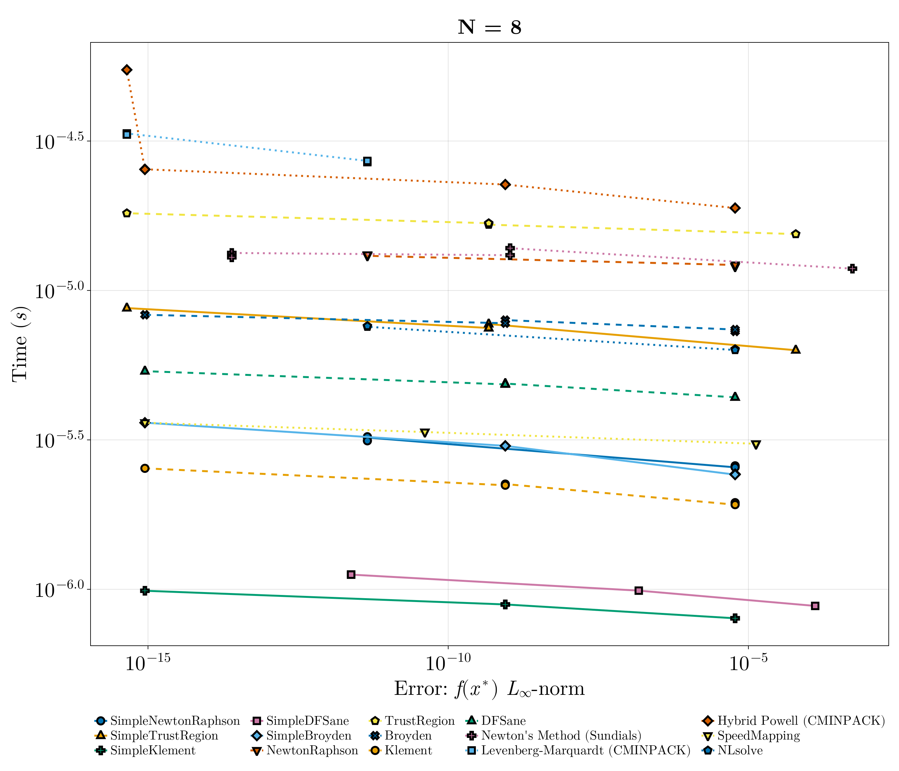
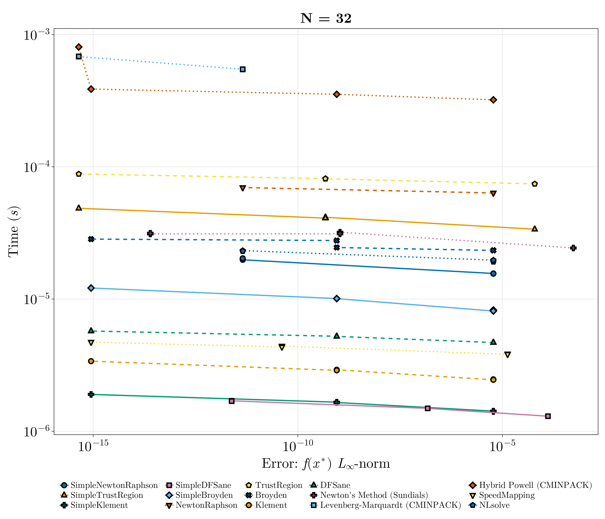

Quadratic Nonlinear Rootfinding Benchmark
This is a test of a simple small nonlinear rootfinding problem.
using NonlinearSolve, StaticArrays, DiffEqDevTools, Sundials, CairoMakie, LinearSolve,
LinearAlgebra
import MINPACK, NLsolve, SpeedMapping
f_oop(u, p) = u .* u .- p
f_iip(du, u, p) = (du .= u .* u .- p)
function generate_prob(::Val{N}, ::Val{static}) where {N, static}
u0 = static ? ones(SVector{N, Float64}) : ones(N)
prob = static ? NonlinearProblem{false}(f_oop, u0, 2.0) :
NonlinearProblem{true}(f_iip, u0, 2.0)
return prob
endgenerate_prob (generic function with 1 method)List of Solvers to Benchmark:
solvers = [
(; type = :simplenonlinearsolve, solver = Dict(:alg => SimpleNewtonRaphson()), name = "SimpleNewtonRaphson"),
(; type = :simplenonlinearsolve, solver = Dict(:alg => SimpleTrustRegion()), name = "SimpleTrustRegion"),
(; type = :simplenonlinearsolve, solver = Dict(:alg => SimpleKlement()), name = "SimpleKlement"),
(; type = :simplenonlinearsolve, solver = Dict(:alg => SimpleDFSane()), name = "SimpleDFSane"),
(; type = :simplenonlinearsolve, solver = Dict(:alg => SimpleBroyden()), name = "SimpleBroyden"),
(; type = :nonlinearsolve, solver = Dict(:alg => NewtonRaphson()), name = "NewtonRaphson"),
(; type = :nonlinearsolve, solver = Dict(:alg => TrustRegion()), name = "TrustRegion"),
(; type = :nonlinearsolve, solver = Dict(:alg => Broyden()), name = "Broyden"),
(; type = :nonlinearsolve, solver = Dict(:alg => Klement()), name = "Klement"),
(; type = :nonlinearsolve, solver = Dict(:alg => DFSane()), name = "DFSane"),
(; type = :others, solver = Dict(:alg => KINSOL()), name = "Newton's Method (Sundials)"),
(; type = :others, solver = Dict(:alg => CMINPACK(; method = :lm)), name = "Levenberg-Marquardt (CMINPACK)"),
(; type = :others, solver = Dict(:alg => CMINPACK(; method = :hybr)), name = "Hybrid Powell (CMINPACK)"),
(; type = :others, solver = Dict(:alg => SpeedMappingJL()), name = "SpeedMapping"),
(; type = :others, solver = Dict(:alg => NLsolveJL()), name = "NLsolve"),
]15-element Vector{NamedTuple{(:type, :solver, :name)}}:
(type = :simplenonlinearsolve, solver = Dict(:alg => SimpleNonlinearSolve.
SimpleNewtonRaphson{Nothing}(nothing)), name = "SimpleNewtonRaphson")
(type = :simplenonlinearsolve, solver = Dict{Symbol, SimpleNonlinearSolve.
SimpleTrustRegion{Nothing, Float64, Float64, Float64, Float64, Float64, Flo
at64, Float64}}(:alg => SimpleNonlinearSolve.SimpleTrustRegion{Nothing, Flo
at64, Float64, Float64, Float64, Float64, Float64, Float64}(nothing, 0.0, 0
.0, 0.0001, 0.25, 0.75, 0.25, 2.0, 32)), name = "SimpleTrustRegion")
(type = :simplenonlinearsolve, solver = Dict(:alg => SimpleNonlinearSolve.
SimpleKlement()), name = "SimpleKlement")
(type = :simplenonlinearsolve, solver = Dict{Symbol, SimpleNonlinearSolve.
SimpleDFSane{10, Float64, Float64, Float64, Float64, Float64, Float64, Simp
leNonlinearSolve.var"#48#50"}}(:alg => SimpleNonlinearSolve.SimpleDFSane{10
, Float64, Float64, Float64, Float64, Float64, Float64, SimpleNonlinearSolv
e.var"#48#50"}(1.0e-10, 1.0e10, 1.0, 0.0001, 0.1, 0.5, 2, SimpleNonlinearSo
lve.var"#48#50"())), name = "SimpleDFSane")
(type = :simplenonlinearsolve, solver = Dict(:alg => SimpleNonlinearSolve.
SimpleBroyden{false, Nothing}(nothing)), name = "SimpleBroyden")
(type = :nonlinearsolve, solver = Dict{Symbol, NonlinearSolve.GeneralizedF
irstOrderAlgorithm{nothing, :NewtonRaphson, NonlinearSolve.NoLineSearch, Mi
ssing, NonlinearSolve.NewtonDescent{Nothing, typeof(NonlinearSolve.DEFAULT_
PRECS)}, Nothing, Nothing, Nothing}}(:alg => NewtonRaphson(
descent = NewtonDescent()
)), name = "NewtonRaphson")
(type = :nonlinearsolve, solver = Dict{Symbol, NonlinearSolve.GeneralizedF
irstOrderAlgorithm{nothing, :TrustRegion, Missing, NonlinearSolve.GenericTr
ustRegionScheme{NonlinearSolve.RadiusUpdateSchemes.__Simple, Rational{Int64
}, Rational{Int64}, Rational{Int64}, Rational{Int64}, Rational{Int64}, Noth
ing, Nothing, Nothing, Nothing}, NonlinearSolve.Dogleg{NonlinearSolve.Newto
nDescent{Nothing, typeof(NonlinearSolve.DEFAULT_PRECS)}, NonlinearSolve.Ste
epestDescent{Nothing, typeof(NonlinearSolve.DEFAULT_PRECS)}}, Nothing, Noth
ing, Nothing}}(:alg => TrustRegion(
trustregion = GenericTrustRegionScheme(method = RadiusUpdateSchemes.Simp
le),
descent = Dogleg(newton_descent = NewtonDescent(), steepest_descent = St
eepestDescent())
)), name = "TrustRegion")
(type = :nonlinearsolve, solver = Dict{Symbol, NonlinearSolve.ApproximateJ
acobianSolveAlgorithm{false, :Broyden, NonlinearSolve.NoLineSearch, Missing
, NonlinearSolve.NewtonDescent{Nothing, typeof(NonlinearSolve.DEFAULT_PRECS
)}, NonlinearSolve.GoodBroydenUpdateRule, NonlinearSolve.NoChangeInStateRes
et{Nothing}, NonlinearSolve.IdentityInitialization{Nothing, NonlinearSolve.
FullStructure}}}(:alg => Broyden(
descent = NewtonDescent(),
update_rule = GoodBroydenUpdateRule(),
reinit_rule = NoChangeInStateReset(),
max_resets = 100,
initialization = IdentityInitialization(structure = FullStructure()),
inverse_jacobian = true
)), name = "Broyden")
(type = :nonlinearsolve, solver = Dict{Symbol, NonlinearSolve.ApproximateJ
acobianSolveAlgorithm{false, :Klement, NonlinearSolve.NoLineSearch, Missing
, NonlinearSolve.NewtonDescent{Nothing, typeof(NonlinearSolve.DEFAULT_PRECS
)}, NonlinearSolve.KlementUpdateRule, NonlinearSolve.IllConditionedJacobian
Reset, NonlinearSolve.IdentityInitialization{Nothing, NonlinearSolve.Diagon
alStructure}}}(:alg => Klement(
descent = NewtonDescent(),
update_rule = KlementUpdateRule(),
reinit_rule = IllConditionedJacobianReset(),
max_resets = 100,
initialization = IdentityInitialization(structure = DiagonalStructure()
)
)), name = "Klement")
(type = :nonlinearsolve, solver = Dict{Symbol, NonlinearSolve.GeneralizedD
FSane{:DFSane, NonlinearSolve.RobustNonMonotoneLineSearch{Rational{Int64},
Int64, Rational{Int64}, Rational{Int64}, NonlinearSolve.var"#243#245"}, Rat
ional{Int64}, Float64, Nothing}}(:alg => DFSane(
linesearch = RobustNonMonotoneLineSearch(),
σ_min = 1//10000000000,
σ_max = 1.0e10,
σ_1 = nothing
)), name = "DFSane")
(type = :others, solver = Dict{Symbol, Sundials.KINSOL{:Dense}}(:alg => Su
ndials.KINSOL{:Dense}(0, 0, nothing, 0, 0, :None)), name = "Newton's Method
(Sundials)")
(type = :others, solver = Dict{Symbol, NonlinearSolve.CMINPACK{Missing}}(:
alg => CMINPACK()), name = "Levenberg-Marquardt (CMINPACK)")
(type = :others, solver = Dict{Symbol, NonlinearSolve.CMINPACK{Missing}}(:
alg => CMINPACK()), name = "Hybrid Powell (CMINPACK)")
(type = :others, solver = Dict{Symbol, NonlinearSolve.SpeedMappingJL{Float
64, Int64}}(:alg => SpeedMappingJL()), name = "SpeedMapping")
(type = :others, solver = Dict{Symbol, NonlinearSolve.NLsolveJL{Symbol, Li
neSearches.Static, NonlinearSolve.var"#258#260", Float64, Float64}}(:alg =>
NLsolveJL()), name = "NLsolve")Configurations:
abstols = 1.0 ./ 10.0 .^ (3:2:12)
reltols = 1.0 ./ 10.0 .^ (3:2:12)5-element Vector{Float64}:
0.001
1.0e-5
1.0e-7
1.0e-9
1.0e-11Helper Functions:
function check_solver(prob, solver)
try
sol = solve(prob, solver.solver[:alg]; abstol = 1e-5, reltol = 1e-5,
maxiters = 10000)
err = norm(sol.resid)
if !SciMLBase.successful_retcode(sol.retcode)
Base.printstyled("[Warn] Solver $(solver.name) returned retcode $(sol.retcode) with an residual norm = $(norm(sol.resid)).\n";
color = :red)
return false
elseif err > 1e3
Base.printstyled("[Warn] Solver $(solver.name) had a very large residual (norm = $(norm(sol.resid))).\n";
color = :red)
return false
elseif isinf(err) || isnan(err)
Base.printstyled("[Warn] Solver $(solver.name) had a residual of $(err).\n";
color = :red)
return false
end
Base.printstyled("[Info] Solver $(solver.name) successfully solved the problem (norm = $(norm(sol.resid))).\n";
color = :green)
catch e
Base.printstyled("[Warn] Solver $(solver.name) threw an error: $e.\n"; color = :red)
return false
end
return true
end
function generate_wpset(prob, solvers)
successful_solvers = filter(solver -> check_solver(prob, solver), solvers)
return WorkPrecisionSet(prob, abstols, reltols, getfield.(successful_solvers, :solver);
numruns = 50, error_estimate = :l∞, names = getfield.(successful_solvers, :name),
maxiters = 10000), successful_solvers
endgenerate_wpset (generic function with 1 method)Plotting Functions:
function plot_wpset(wpset, successful_solvers, title)
cycle = Cycle([:color, :marker], covary = true)
theme = merge(theme_latexfonts(), Theme(Lines = (cycle = cycle,),
Scatter = (cycle = cycle,)))
linestyle = Dict(:simplenonlinearsolve => :solid, :nonlinearsolve => :dash,
:others => :dot)
fig = with_theme(theme; fontsize = 32) do
fig = Figure(; size = (1400, 1200))
ax = Axis(fig[1, 1]; ylabel = L"Time ($s$)", title, xscale = log10, yscale = log10,
xlabel = L"Error: $f(x^\ast)$ $L_{\infty}$-norm")
ls, scs = [], []
for (wp, solver) in zip(wpset.wps, successful_solvers)
(; name, times, errors) = wp
errors = [err.l∞ for err in errors]
l = lines!(ax, errors, times; label = name, linewidth = 3, linestyle = linestyle[solver.type])
sc = scatter!(ax, errors, times; label = name, markersize = 16, strokewidth = 3)
push!(ls, l)
push!(scs, sc)
end
Legend(fig[2, 1], [[l, sc] for (l, sc) in zip(ls, scs)],
[solver.name for solver in successful_solvers], position = :ct, color = :white,
framevisible=false, label = "Solvers", orientation = :horizontal,
tellwidth = false, tellheight = true, nbanks = 3, labelsize = 20)
fig
end
return fig
endplot_wpset (generic function with 1 method)Static Array Versions
N = 2
prob = generate_prob(Val(2), Val(true))
wpset, successful_solvers = generate_wpset(prob, solvers);
fig = plot_wpset(wpset, successful_solvers, "N = 2")[Info] Solver SimpleNewtonRaphson successfully solved the problem (norm = 8
.495612038666664e-6).
[Info] Solver SimpleTrustRegion successfully solved the problem (norm = 6.6
87362921505273e-10).
[Info] Solver SimpleKlement successfully solved the problem (norm = 8.49558
6520581969e-6).
[Info] Solver SimpleDFSane successfully solved the problem (norm = 2.110961
8780448975e-7).
[Info] Solver SimpleBroyden successfully solved the problem (norm = 8.49561
2038666664e-6).
[Info] Solver NewtonRaphson successfully solved the problem (norm = 8.49561
2038666664e-6).
[Info] Solver TrustRegion successfully solved the problem (norm = 6.6873629
21505273e-10).
[Info] Solver Broyden successfully solved the problem (norm = 8.49561203866
6664e-6).
[Info] Solver Klement successfully solved the problem (norm = 8.49561203866
6664e-6).
[Info] Solver DFSane successfully solved the problem (norm = 8.495586520581
969e-6).
[Warn] Solver Newton's Method (Sundials) threw an error: MethodError(Core.k
wcall, ((userdata = nothing, linear_solver = :Dense, jac_upper = 0, jac_low
er = 0, abstol = 1.0e-5, jac_prototype = nothing, prec_side = 0, krylov_dim
= 0, maxiters = 10000, strategy = :None), Sundials.___kinsol, Sundials.var
"#32#38"{SciMLBase.NonlinearProblem{StaticArraysCore.SVector{2, Float64}, f
alse, Float64, SciMLBase.NonlinearFunction{false, SciMLBase.FullSpecialize,
typeof(Main.var"##WeaveSandBox#225".f_oop), LinearAlgebra.UniformScaling{B
ool}, Nothing, Nothing, Nothing, Nothing, Nothing, Nothing, Nothing, Nothin
g, Nothing, Nothing, typeof(SciMLBase.DEFAULT_OBSERVED_NO_TIME), Nothing, S
ymbolicIndexingInterface.SymbolCache{Nothing, Nothing, Nothing}, Nothing},
Base.Pairs{Symbol, Union{}, Tuple{}, @NamedTuple{}}, SciMLBase.StandardNonl
inearProblem}, Float64}(SciMLBase.NonlinearProblem{StaticArraysCore.SVector
{2, Float64}, false, Float64, SciMLBase.NonlinearFunction{false, SciMLBase.
FullSpecialize, typeof(Main.var"##WeaveSandBox#225".f_oop), LinearAlgebra.U
niformScaling{Bool}, Nothing, Nothing, Nothing, Nothing, Nothing, Nothing,
Nothing, Nothing, Nothing, Nothing, typeof(SciMLBase.DEFAULT_OBSERVED_NO_TI
ME), Nothing, SymbolicIndexingInterface.SymbolCache{Nothing, Nothing, Nothi
ng}, Nothing}, Base.Pairs{Symbol, Union{}, Tuple{}, @NamedTuple{}}, SciMLBa
se.StandardNonlinearProblem}(SciMLBase.NonlinearFunction{false, SciMLBase.F
ullSpecialize, typeof(Main.var"##WeaveSandBox#225".f_oop), LinearAlgebra.Un
iformScaling{Bool}, Nothing, Nothing, Nothing, Nothing, Nothing, Nothing, N
othing, Nothing, Nothing, Nothing, typeof(SciMLBase.DEFAULT_OBSERVED_NO_TIM
E), Nothing, SymbolicIndexingInterface.SymbolCache{Nothing, Nothing, Nothin
g}, Nothing}(Main.var"##WeaveSandBox#225".f_oop, LinearAlgebra.UniformScali
ng{Bool}(true), nothing, nothing, nothing, nothing, nothing, nothing, nothi
ng, nothing, nothing, nothing, SciMLBase.DEFAULT_OBSERVED_NO_TIME, nothing,
SymbolicIndexingInterface.SymbolCache{Nothing, Nothing, Nothing}(nothing,
nothing, nothing), nothing), [1.0, 1.0], 2.0, SciMLBase.StandardNonlinearPr
oblem(), Base.Pairs{Symbol, Union{}, Tuple{}, @NamedTuple{}}()), 2.0), [1.0
, 1.0]), 0x0000000000007c34).
[Warn] Solver Levenberg-Marquardt (CMINPACK) threw an error: MethodError(Co
re.kwcall, ((tol = 1.0e-5, show_trace = false, tracing = false, method = :l
m, iterations = 10000), MINPACK.fsolve, NonlinearSolveMINPACKExt.var"#2#4"{
NonlinearSolve.var"#19#29"{NonlinearSolve.var"#14#24"{SciMLBase.NonlinearPr
oblem{StaticArraysCore.SVector{2, Float64}, false, Float64, SciMLBase.Nonli
nearFunction{false, SciMLBase.FullSpecialize, typeof(Main.var"##WeaveSandBo
x#225".f_oop), LinearAlgebra.UniformScaling{Bool}, Nothing, Nothing, Nothin
g, Nothing, Nothing, Nothing, Nothing, Nothing, Nothing, Nothing, typeof(Sc
iMLBase.DEFAULT_OBSERVED_NO_TIME), Nothing, SymbolicIndexingInterface.Symbo
lCache{Nothing, Nothing, Nothing}, Nothing}, Base.Pairs{Symbol, Union{}, Tu
ple{}, @NamedTuple{}}, SciMLBase.StandardNonlinearProblem}}, Tuple{Int64}}}
(NonlinearSolve.var"#19#29"{NonlinearSolve.var"#14#24"{SciMLBase.NonlinearP
roblem{StaticArraysCore.SVector{2, Float64}, false, Float64, SciMLBase.Nonl
inearFunction{false, SciMLBase.FullSpecialize, typeof(Main.var"##WeaveSandB
ox#225".f_oop), LinearAlgebra.UniformScaling{Bool}, Nothing, Nothing, Nothi
ng, Nothing, Nothing, Nothing, Nothing, Nothing, Nothing, Nothing, typeof(S
ciMLBase.DEFAULT_OBSERVED_NO_TIME), Nothing, SymbolicIndexingInterface.Symb
olCache{Nothing, Nothing, Nothing}, Nothing}, Base.Pairs{Symbol, Union{}, T
uple{}, @NamedTuple{}}, SciMLBase.StandardNonlinearProblem}}, Tuple{Int64}}
(NonlinearSolve.var"#14#24"{SciMLBase.NonlinearProblem{StaticArraysCore.SVe
ctor{2, Float64}, false, Float64, SciMLBase.NonlinearFunction{false, SciMLB
ase.FullSpecialize, typeof(Main.var"##WeaveSandBox#225".f_oop), LinearAlgeb
ra.UniformScaling{Bool}, Nothing, Nothing, Nothing, Nothing, Nothing, Nothi
ng, Nothing, Nothing, Nothing, Nothing, typeof(SciMLBase.DEFAULT_OBSERVED_N
O_TIME), Nothing, SymbolicIndexingInterface.SymbolCache{Nothing, Nothing, N
othing}, Nothing}, Base.Pairs{Symbol, Union{}, Tuple{}, @NamedTuple{}}, Sci
MLBase.StandardNonlinearProblem}}(SciMLBase.NonlinearProblem{StaticArraysCo
re.SVector{2, Float64}, false, Float64, SciMLBase.NonlinearFunction{false,
SciMLBase.FullSpecialize, typeof(Main.var"##WeaveSandBox#225".f_oop), Linea
rAlgebra.UniformScaling{Bool}, Nothing, Nothing, Nothing, Nothing, Nothing,
Nothing, Nothing, Nothing, Nothing, Nothing, typeof(SciMLBase.DEFAULT_OBSE
RVED_NO_TIME), Nothing, SymbolicIndexingInterface.SymbolCache{Nothing, Noth
ing, Nothing}, Nothing}, Base.Pairs{Symbol, Union{}, Tuple{}, @NamedTuple{}
}, SciMLBase.StandardNonlinearProblem}(SciMLBase.NonlinearFunction{false, S
ciMLBase.FullSpecialize, typeof(Main.var"##WeaveSandBox#225".f_oop), Linear
Algebra.UniformScaling{Bool}, Nothing, Nothing, Nothing, Nothing, Nothing,
Nothing, Nothing, Nothing, Nothing, Nothing, typeof(SciMLBase.DEFAULT_OBSER
VED_NO_TIME), Nothing, SymbolicIndexingInterface.SymbolCache{Nothing, Nothi
ng, Nothing}, Nothing}(Main.var"##WeaveSandBox#225".f_oop, LinearAlgebra.Un
iformScaling{Bool}(true), nothing, nothing, nothing, nothing, nothing, noth
ing, nothing, nothing, nothing, nothing, SciMLBase.DEFAULT_OBSERVED_NO_TIME
, nothing, SymbolicIndexingInterface.SymbolCache{Nothing, Nothing, Nothing}
(nothing, nothing, nothing), nothing), [1.0, 1.0], 2.0, SciMLBase.StandardN
onlinearProblem(), Base.Pairs{Symbol, Union{}, Tuple{}, @NamedTuple{}}())),
(2,))), [1.0, 1.0], 2), 0x0000000000007c34).
[Warn] Solver Hybrid Powell (CMINPACK) threw an error: MethodError(Core.kwc
all, ((tol = 1.0e-5, show_trace = false, tracing = false, method = :hybr, i
terations = 10000), MINPACK.fsolve, NonlinearSolveMINPACKExt.var"#2#4"{Nonl
inearSolve.var"#19#29"{NonlinearSolve.var"#14#24"{SciMLBase.NonlinearProble
m{StaticArraysCore.SVector{2, Float64}, false, Float64, SciMLBase.Nonlinear
Function{false, SciMLBase.FullSpecialize, typeof(Main.var"##WeaveSandBox#22
5".f_oop), LinearAlgebra.UniformScaling{Bool}, Nothing, Nothing, Nothing, N
othing, Nothing, Nothing, Nothing, Nothing, Nothing, Nothing, typeof(SciMLB
ase.DEFAULT_OBSERVED_NO_TIME), Nothing, SymbolicIndexingInterface.SymbolCac
he{Nothing, Nothing, Nothing}, Nothing}, Base.Pairs{Symbol, Union{}, Tuple{
}, @NamedTuple{}}, SciMLBase.StandardNonlinearProblem}}, Tuple{Int64}}}(Non
linearSolve.var"#19#29"{NonlinearSolve.var"#14#24"{SciMLBase.NonlinearProbl
em{StaticArraysCore.SVector{2, Float64}, false, Float64, SciMLBase.Nonlinea
rFunction{false, SciMLBase.FullSpecialize, typeof(Main.var"##WeaveSandBox#2
25".f_oop), LinearAlgebra.UniformScaling{Bool}, Nothing, Nothing, Nothing,
Nothing, Nothing, Nothing, Nothing, Nothing, Nothing, Nothing, typeof(SciML
Base.DEFAULT_OBSERVED_NO_TIME), Nothing, SymbolicIndexingInterface.SymbolCa
che{Nothing, Nothing, Nothing}, Nothing}, Base.Pairs{Symbol, Union{}, Tuple
{}, @NamedTuple{}}, SciMLBase.StandardNonlinearProblem}}, Tuple{Int64}}(Non
linearSolve.var"#14#24"{SciMLBase.NonlinearProblem{StaticArraysCore.SVector
{2, Float64}, false, Float64, SciMLBase.NonlinearFunction{false, SciMLBase.
FullSpecialize, typeof(Main.var"##WeaveSandBox#225".f_oop), LinearAlgebra.U
niformScaling{Bool}, Nothing, Nothing, Nothing, Nothing, Nothing, Nothing,
Nothing, Nothing, Nothing, Nothing, typeof(SciMLBase.DEFAULT_OBSERVED_NO_TI
ME), Nothing, SymbolicIndexingInterface.SymbolCache{Nothing, Nothing, Nothi
ng}, Nothing}, Base.Pairs{Symbol, Union{}, Tuple{}, @NamedTuple{}}, SciMLBa
se.StandardNonlinearProblem}}(SciMLBase.NonlinearProblem{StaticArraysCore.S
Vector{2, Float64}, false, Float64, SciMLBase.NonlinearFunction{false, SciM
LBase.FullSpecialize, typeof(Main.var"##WeaveSandBox#225".f_oop), LinearAlg
ebra.UniformScaling{Bool}, Nothing, Nothing, Nothing, Nothing, Nothing, Not
hing, Nothing, Nothing, Nothing, Nothing, typeof(SciMLBase.DEFAULT_OBSERVED
_NO_TIME), Nothing, SymbolicIndexingInterface.SymbolCache{Nothing, Nothing,
Nothing}, Nothing}, Base.Pairs{Symbol, Union{}, Tuple{}, @NamedTuple{}}, S
ciMLBase.StandardNonlinearProblem}(SciMLBase.NonlinearFunction{false, SciML
Base.FullSpecialize, typeof(Main.var"##WeaveSandBox#225".f_oop), LinearAlge
bra.UniformScaling{Bool}, Nothing, Nothing, Nothing, Nothing, Nothing, Noth
ing, Nothing, Nothing, Nothing, Nothing, typeof(SciMLBase.DEFAULT_OBSERVED_
NO_TIME), Nothing, SymbolicIndexingInterface.SymbolCache{Nothing, Nothing,
Nothing}, Nothing}(Main.var"##WeaveSandBox#225".f_oop, LinearAlgebra.Unifor
mScaling{Bool}(true), nothing, nothing, nothing, nothing, nothing, nothing,
nothing, nothing, nothing, nothing, SciMLBase.DEFAULT_OBSERVED_NO_TIME, no
thing, SymbolicIndexingInterface.SymbolCache{Nothing, Nothing, Nothing}(not
hing, nothing, nothing), nothing), [1.0, 1.0], 2.0, SciMLBase.StandardNonli
nearProblem(), Base.Pairs{Symbol, Union{}, Tuple{}, @NamedTuple{}}())), (2,
))), [1.0, 1.0], 2), 0x0000000000007c34).
[Warn] Solver SpeedMapping threw an error: MethodError(SpeedMapping.mapping
!, (nothing, NonlinearSolve.var"#19#29"{NonlinearSolve.var"#12#22"{SciMLBas
e.NonlinearProblem{StaticArraysCore.SVector{2, Float64}, false, Float64, Sc
iMLBase.NonlinearFunction{false, SciMLBase.FullSpecialize, typeof(Main.var"
##WeaveSandBox#225".f_oop), LinearAlgebra.UniformScaling{Bool}, Nothing, No
thing, Nothing, Nothing, Nothing, Nothing, Nothing, Nothing, Nothing, Nothi
ng, typeof(SciMLBase.DEFAULT_OBSERVED_NO_TIME), Nothing, SymbolicIndexingIn
terface.SymbolCache{Nothing, Nothing, Nothing}, Nothing}, Base.Pairs{Symbol
, Union{}, Tuple{}, @NamedTuple{}}, SciMLBase.StandardNonlinearProblem}}, T
uple{Int64}}(NonlinearSolve.var"#12#22"{SciMLBase.NonlinearProblem{StaticAr
raysCore.SVector{2, Float64}, false, Float64, SciMLBase.NonlinearFunction{f
alse, SciMLBase.FullSpecialize, typeof(Main.var"##WeaveSandBox#225".f_oop),
LinearAlgebra.UniformScaling{Bool}, Nothing, Nothing, Nothing, Nothing, No
thing, Nothing, Nothing, Nothing, Nothing, Nothing, typeof(SciMLBase.DEFAUL
T_OBSERVED_NO_TIME), Nothing, SymbolicIndexingInterface.SymbolCache{Nothing
, Nothing, Nothing}, Nothing}, Base.Pairs{Symbol, Union{}, Tuple{}, @NamedT
uple{}}, SciMLBase.StandardNonlinearProblem}}(SciMLBase.NonlinearProblem{St
aticArraysCore.SVector{2, Float64}, false, Float64, SciMLBase.NonlinearFunc
tion{false, SciMLBase.FullSpecialize, typeof(Main.var"##WeaveSandBox#225".f
_oop), LinearAlgebra.UniformScaling{Bool}, Nothing, Nothing, Nothing, Nothi
ng, Nothing, Nothing, Nothing, Nothing, Nothing, Nothing, typeof(SciMLBase.
DEFAULT_OBSERVED_NO_TIME), Nothing, SymbolicIndexingInterface.SymbolCache{N
othing, Nothing, Nothing}, Nothing}, Base.Pairs{Symbol, Union{}, Tuple{}, @
NamedTuple{}}, SciMLBase.StandardNonlinearProblem}(SciMLBase.NonlinearFunct
ion{false, SciMLBase.FullSpecialize, typeof(Main.var"##WeaveSandBox#225".f_
oop), LinearAlgebra.UniformScaling{Bool}, Nothing, Nothing, Nothing, Nothin
g, Nothing, Nothing, Nothing, Nothing, Nothing, Nothing, typeof(SciMLBase.D
EFAULT_OBSERVED_NO_TIME), Nothing, SymbolicIndexingInterface.SymbolCache{No
thing, Nothing, Nothing}, Nothing}(Main.var"##WeaveSandBox#225".f_oop, Line
arAlgebra.UniformScaling{Bool}(true), nothing, nothing, nothing, nothing, n
othing, nothing, nothing, nothing, nothing, nothing, SciMLBase.DEFAULT_OBSE
RVED_NO_TIME, nothing, SymbolicIndexingInterface.SymbolCache{Nothing, Nothi
ng, Nothing}(nothing, nothing, nothing), nothing), [1.0, 1.0], 2.0, SciMLBa
se.StandardNonlinearProblem(), Base.Pairs{Symbol, Union{}, Tuple{}, @NamedT
uple{}}())), (2,)), [6.9406223293945e-310, 6.94015744897946e-310], [6.94062
23293945e-310, 6.9406205439598e-310], SpeedMapping.State{Float64}(false, In
f, 10000.0, 1000.0, 0.01, 1.706703546352386e9, 1.0e-5, true, false, 0, 1, 0
, 0.0, 1.0, Inf, Inf, 0, 0, 1, 1.0, 1.0, 1.0, 1.0, Inf, Inf, 1.0, 1), nothi
ng, [1.0, 1.0], nothing, nothing, true, false), 0x0000000000007c34).
[Warn] Solver NLsolve threw an error: ErrorException("setindex!(::StaticArr
aysCore.SVector{2, Float64}, value, ::Int) is not defined.\n Hint: Use `MAr
ray` or `SizedArray` to create a mutable static array").
N = 4
prob = generate_prob(Val(4), Val(true))
wpset, successful_solvers = generate_wpset(prob, solvers);
fig = plot_wpset(wpset, successful_solvers, "N = 4")[Info] Solver SimpleNewtonRaphson successfully solved the problem (norm = 1
.2014609765742534e-5).
[Info] Solver SimpleTrustRegion successfully solved the problem (norm = 9.4
57359340103721e-10).
[Info] Solver SimpleKlement successfully solved the problem (norm = 1.20145
73677721074e-5).
[Info] Solver SimpleDFSane successfully solved the problem (norm = 2.985350
9175836734e-7).
[Info] Solver SimpleBroyden successfully solved the problem (norm = 1.20146
09765742534e-5).
[Info] Solver NewtonRaphson successfully solved the problem (norm = 1.20146
09765742534e-5).
[Info] Solver TrustRegion successfully solved the problem (norm = 9.4573593
40103721e-10).
[Info] Solver Broyden successfully solved the problem (norm = 1.20146097657
42534e-5).
[Info] Solver Klement successfully solved the problem (norm = 1.20146097657
42534e-5).
[Info] Solver DFSane successfully solved the problem (norm = 1.201457367772
1074e-5).
[Warn] Solver Newton's Method (Sundials) threw an error: MethodError(Core.k
wcall, ((userdata = nothing, linear_solver = :Dense, jac_upper = 0, jac_low
er = 0, abstol = 1.0e-5, jac_prototype = nothing, prec_side = 0, krylov_dim
= 0, maxiters = 10000, strategy = :None), Sundials.___kinsol, Sundials.var
"#32#38"{SciMLBase.NonlinearProblem{StaticArraysCore.SVector{4, Float64}, f
alse, Float64, SciMLBase.NonlinearFunction{false, SciMLBase.FullSpecialize,
typeof(Main.var"##WeaveSandBox#225".f_oop), LinearAlgebra.UniformScaling{B
ool}, Nothing, Nothing, Nothing, Nothing, Nothing, Nothing, Nothing, Nothin
g, Nothing, Nothing, typeof(SciMLBase.DEFAULT_OBSERVED_NO_TIME), Nothing, S
ymbolicIndexingInterface.SymbolCache{Nothing, Nothing, Nothing}, Nothing},
Base.Pairs{Symbol, Union{}, Tuple{}, @NamedTuple{}}, SciMLBase.StandardNonl
inearProblem}, Float64}(SciMLBase.NonlinearProblem{StaticArraysCore.SVector
{4, Float64}, false, Float64, SciMLBase.NonlinearFunction{false, SciMLBase.
FullSpecialize, typeof(Main.var"##WeaveSandBox#225".f_oop), LinearAlgebra.U
niformScaling{Bool}, Nothing, Nothing, Nothing, Nothing, Nothing, Nothing,
Nothing, Nothing, Nothing, Nothing, typeof(SciMLBase.DEFAULT_OBSERVED_NO_TI
ME), Nothing, SymbolicIndexingInterface.SymbolCache{Nothing, Nothing, Nothi
ng}, Nothing}, Base.Pairs{Symbol, Union{}, Tuple{}, @NamedTuple{}}, SciMLBa
se.StandardNonlinearProblem}(SciMLBase.NonlinearFunction{false, SciMLBase.F
ullSpecialize, typeof(Main.var"##WeaveSandBox#225".f_oop), LinearAlgebra.Un
iformScaling{Bool}, Nothing, Nothing, Nothing, Nothing, Nothing, Nothing, N
othing, Nothing, Nothing, Nothing, typeof(SciMLBase.DEFAULT_OBSERVED_NO_TIM
E), Nothing, SymbolicIndexingInterface.SymbolCache{Nothing, Nothing, Nothin
g}, Nothing}(Main.var"##WeaveSandBox#225".f_oop, LinearAlgebra.UniformScali
ng{Bool}(true), nothing, nothing, nothing, nothing, nothing, nothing, nothi
ng, nothing, nothing, nothing, SciMLBase.DEFAULT_OBSERVED_NO_TIME, nothing,
SymbolicIndexingInterface.SymbolCache{Nothing, Nothing, Nothing}(nothing,
nothing, nothing), nothing), [1.0, 1.0, 1.0, 1.0], 2.0, SciMLBase.StandardN
onlinearProblem(), Base.Pairs{Symbol, Union{}, Tuple{}, @NamedTuple{}}()),
2.0), [1.0, 1.0, 1.0, 1.0]), 0x0000000000007c34).
[Warn] Solver Levenberg-Marquardt (CMINPACK) threw an error: MethodError(Co
re.kwcall, ((tol = 1.0e-5, show_trace = false, tracing = false, method = :l
m, iterations = 10000), MINPACK.fsolve, NonlinearSolveMINPACKExt.var"#2#4"{
NonlinearSolve.var"#19#29"{NonlinearSolve.var"#14#24"{SciMLBase.NonlinearPr
oblem{StaticArraysCore.SVector{4, Float64}, false, Float64, SciMLBase.Nonli
nearFunction{false, SciMLBase.FullSpecialize, typeof(Main.var"##WeaveSandBo
x#225".f_oop), LinearAlgebra.UniformScaling{Bool}, Nothing, Nothing, Nothin
g, Nothing, Nothing, Nothing, Nothing, Nothing, Nothing, Nothing, typeof(Sc
iMLBase.DEFAULT_OBSERVED_NO_TIME), Nothing, SymbolicIndexingInterface.Symbo
lCache{Nothing, Nothing, Nothing}, Nothing}, Base.Pairs{Symbol, Union{}, Tu
ple{}, @NamedTuple{}}, SciMLBase.StandardNonlinearProblem}}, Tuple{Int64}}}
(NonlinearSolve.var"#19#29"{NonlinearSolve.var"#14#24"{SciMLBase.NonlinearP
roblem{StaticArraysCore.SVector{4, Float64}, false, Float64, SciMLBase.Nonl
inearFunction{false, SciMLBase.FullSpecialize, typeof(Main.var"##WeaveSandB
ox#225".f_oop), LinearAlgebra.UniformScaling{Bool}, Nothing, Nothing, Nothi
ng, Nothing, Nothing, Nothing, Nothing, Nothing, Nothing, Nothing, typeof(S
ciMLBase.DEFAULT_OBSERVED_NO_TIME), Nothing, SymbolicIndexingInterface.Symb
olCache{Nothing, Nothing, Nothing}, Nothing}, Base.Pairs{Symbol, Union{}, T
uple{}, @NamedTuple{}}, SciMLBase.StandardNonlinearProblem}}, Tuple{Int64}}
(NonlinearSolve.var"#14#24"{SciMLBase.NonlinearProblem{StaticArraysCore.SVe
ctor{4, Float64}, false, Float64, SciMLBase.NonlinearFunction{false, SciMLB
ase.FullSpecialize, typeof(Main.var"##WeaveSandBox#225".f_oop), LinearAlgeb
ra.UniformScaling{Bool}, Nothing, Nothing, Nothing, Nothing, Nothing, Nothi
ng, Nothing, Nothing, Nothing, Nothing, typeof(SciMLBase.DEFAULT_OBSERVED_N
O_TIME), Nothing, SymbolicIndexingInterface.SymbolCache{Nothing, Nothing, N
othing}, Nothing}, Base.Pairs{Symbol, Union{}, Tuple{}, @NamedTuple{}}, Sci
MLBase.StandardNonlinearProblem}}(SciMLBase.NonlinearProblem{StaticArraysCo
re.SVector{4, Float64}, false, Float64, SciMLBase.NonlinearFunction{false,
SciMLBase.FullSpecialize, typeof(Main.var"##WeaveSandBox#225".f_oop), Linea
rAlgebra.UniformScaling{Bool}, Nothing, Nothing, Nothing, Nothing, Nothing,
Nothing, Nothing, Nothing, Nothing, Nothing, typeof(SciMLBase.DEFAULT_OBSE
RVED_NO_TIME), Nothing, SymbolicIndexingInterface.SymbolCache{Nothing, Noth
ing, Nothing}, Nothing}, Base.Pairs{Symbol, Union{}, Tuple{}, @NamedTuple{}
}, SciMLBase.StandardNonlinearProblem}(SciMLBase.NonlinearFunction{false, S
ciMLBase.FullSpecialize, typeof(Main.var"##WeaveSandBox#225".f_oop), Linear
Algebra.UniformScaling{Bool}, Nothing, Nothing, Nothing, Nothing, Nothing,
Nothing, Nothing, Nothing, Nothing, Nothing, typeof(SciMLBase.DEFAULT_OBSER
VED_NO_TIME), Nothing, SymbolicIndexingInterface.SymbolCache{Nothing, Nothi
ng, Nothing}, Nothing}(Main.var"##WeaveSandBox#225".f_oop, LinearAlgebra.Un
iformScaling{Bool}(true), nothing, nothing, nothing, nothing, nothing, noth
ing, nothing, nothing, nothing, nothing, SciMLBase.DEFAULT_OBSERVED_NO_TIME
, nothing, SymbolicIndexingInterface.SymbolCache{Nothing, Nothing, Nothing}
(nothing, nothing, nothing), nothing), [1.0, 1.0, 1.0, 1.0], 2.0, SciMLBase
.StandardNonlinearProblem(), Base.Pairs{Symbol, Union{}, Tuple{}, @NamedTup
le{}}())), (4,))), [1.0, 1.0, 1.0, 1.0], 4), 0x0000000000007c34).
[Warn] Solver Hybrid Powell (CMINPACK) threw an error: MethodError(Core.kwc
all, ((tol = 1.0e-5, show_trace = false, tracing = false, method = :hybr, i
terations = 10000), MINPACK.fsolve, NonlinearSolveMINPACKExt.var"#2#4"{Nonl
inearSolve.var"#19#29"{NonlinearSolve.var"#14#24"{SciMLBase.NonlinearProble
m{StaticArraysCore.SVector{4, Float64}, false, Float64, SciMLBase.Nonlinear
Function{false, SciMLBase.FullSpecialize, typeof(Main.var"##WeaveSandBox#22
5".f_oop), LinearAlgebra.UniformScaling{Bool}, Nothing, Nothing, Nothing, N
othing, Nothing, Nothing, Nothing, Nothing, Nothing, Nothing, typeof(SciMLB
ase.DEFAULT_OBSERVED_NO_TIME), Nothing, SymbolicIndexingInterface.SymbolCac
he{Nothing, Nothing, Nothing}, Nothing}, Base.Pairs{Symbol, Union{}, Tuple{
}, @NamedTuple{}}, SciMLBase.StandardNonlinearProblem}}, Tuple{Int64}}}(Non
linearSolve.var"#19#29"{NonlinearSolve.var"#14#24"{SciMLBase.NonlinearProbl
em{StaticArraysCore.SVector{4, Float64}, false, Float64, SciMLBase.Nonlinea
rFunction{false, SciMLBase.FullSpecialize, typeof(Main.var"##WeaveSandBox#2
25".f_oop), LinearAlgebra.UniformScaling{Bool}, Nothing, Nothing, Nothing,
Nothing, Nothing, Nothing, Nothing, Nothing, Nothing, Nothing, typeof(SciML
Base.DEFAULT_OBSERVED_NO_TIME), Nothing, SymbolicIndexingInterface.SymbolCa
che{Nothing, Nothing, Nothing}, Nothing}, Base.Pairs{Symbol, Union{}, Tuple
{}, @NamedTuple{}}, SciMLBase.StandardNonlinearProblem}}, Tuple{Int64}}(Non
linearSolve.var"#14#24"{SciMLBase.NonlinearProblem{StaticArraysCore.SVector
{4, Float64}, false, Float64, SciMLBase.NonlinearFunction{false, SciMLBase.
FullSpecialize, typeof(Main.var"##WeaveSandBox#225".f_oop), LinearAlgebra.U
niformScaling{Bool}, Nothing, Nothing, Nothing, Nothing, Nothing, Nothing,
Nothing, Nothing, Nothing, Nothing, typeof(SciMLBase.DEFAULT_OBSERVED_NO_TI
ME), Nothing, SymbolicIndexingInterface.SymbolCache{Nothing, Nothing, Nothi
ng}, Nothing}, Base.Pairs{Symbol, Union{}, Tuple{}, @NamedTuple{}}, SciMLBa
se.StandardNonlinearProblem}}(SciMLBase.NonlinearProblem{StaticArraysCore.S
Vector{4, Float64}, false, Float64, SciMLBase.NonlinearFunction{false, SciM
LBase.FullSpecialize, typeof(Main.var"##WeaveSandBox#225".f_oop), LinearAlg
ebra.UniformScaling{Bool}, Nothing, Nothing, Nothing, Nothing, Nothing, Not
hing, Nothing, Nothing, Nothing, Nothing, typeof(SciMLBase.DEFAULT_OBSERVED
_NO_TIME), Nothing, SymbolicIndexingInterface.SymbolCache{Nothing, Nothing,
Nothing}, Nothing}, Base.Pairs{Symbol, Union{}, Tuple{}, @NamedTuple{}}, S
ciMLBase.StandardNonlinearProblem}(SciMLBase.NonlinearFunction{false, SciML
Base.FullSpecialize, typeof(Main.var"##WeaveSandBox#225".f_oop), LinearAlge
bra.UniformScaling{Bool}, Nothing, Nothing, Nothing, Nothing, Nothing, Noth
ing, Nothing, Nothing, Nothing, Nothing, typeof(SciMLBase.DEFAULT_OBSERVED_
NO_TIME), Nothing, SymbolicIndexingInterface.SymbolCache{Nothing, Nothing,
Nothing}, Nothing}(Main.var"##WeaveSandBox#225".f_oop, LinearAlgebra.Unifor
mScaling{Bool}(true), nothing, nothing, nothing, nothing, nothing, nothing,
nothing, nothing, nothing, nothing, SciMLBase.DEFAULT_OBSERVED_NO_TIME, no
thing, SymbolicIndexingInterface.SymbolCache{Nothing, Nothing, Nothing}(not
hing, nothing, nothing), nothing), [1.0, 1.0, 1.0, 1.0], 2.0, SciMLBase.Sta
ndardNonlinearProblem(), Base.Pairs{Symbol, Union{}, Tuple{}, @NamedTuple{}
}())), (4,))), [1.0, 1.0, 1.0, 1.0], 4), 0x0000000000007c34).
[Warn] Solver SpeedMapping threw an error: MethodError(SpeedMapping.mapping
!, (nothing, NonlinearSolve.var"#19#29"{NonlinearSolve.var"#12#22"{SciMLBas
e.NonlinearProblem{StaticArraysCore.SVector{4, Float64}, false, Float64, Sc
iMLBase.NonlinearFunction{false, SciMLBase.FullSpecialize, typeof(Main.var"
##WeaveSandBox#225".f_oop), LinearAlgebra.UniformScaling{Bool}, Nothing, No
thing, Nothing, Nothing, Nothing, Nothing, Nothing, Nothing, Nothing, Nothi
ng, typeof(SciMLBase.DEFAULT_OBSERVED_NO_TIME), Nothing, SymbolicIndexingIn
terface.SymbolCache{Nothing, Nothing, Nothing}, Nothing}, Base.Pairs{Symbol
, Union{}, Tuple{}, @NamedTuple{}}, SciMLBase.StandardNonlinearProblem}}, T
uple{Int64}}(NonlinearSolve.var"#12#22"{SciMLBase.NonlinearProblem{StaticAr
raysCore.SVector{4, Float64}, false, Float64, SciMLBase.NonlinearFunction{f
alse, SciMLBase.FullSpecialize, typeof(Main.var"##WeaveSandBox#225".f_oop),
LinearAlgebra.UniformScaling{Bool}, Nothing, Nothing, Nothing, Nothing, No
thing, Nothing, Nothing, Nothing, Nothing, Nothing, typeof(SciMLBase.DEFAUL
T_OBSERVED_NO_TIME), Nothing, SymbolicIndexingInterface.SymbolCache{Nothing
, Nothing, Nothing}, Nothing}, Base.Pairs{Symbol, Union{}, Tuple{}, @NamedT
uple{}}, SciMLBase.StandardNonlinearProblem}}(SciMLBase.NonlinearProblem{St
aticArraysCore.SVector{4, Float64}, false, Float64, SciMLBase.NonlinearFunc
tion{false, SciMLBase.FullSpecialize, typeof(Main.var"##WeaveSandBox#225".f
_oop), LinearAlgebra.UniformScaling{Bool}, Nothing, Nothing, Nothing, Nothi
ng, Nothing, Nothing, Nothing, Nothing, Nothing, Nothing, typeof(SciMLBase.
DEFAULT_OBSERVED_NO_TIME), Nothing, SymbolicIndexingInterface.SymbolCache{N
othing, Nothing, Nothing}, Nothing}, Base.Pairs{Symbol, Union{}, Tuple{}, @
NamedTuple{}}, SciMLBase.StandardNonlinearProblem}(SciMLBase.NonlinearFunct
ion{false, SciMLBase.FullSpecialize, typeof(Main.var"##WeaveSandBox#225".f_
oop), LinearAlgebra.UniformScaling{Bool}, Nothing, Nothing, Nothing, Nothin
g, Nothing, Nothing, Nothing, Nothing, Nothing, Nothing, typeof(SciMLBase.D
EFAULT_OBSERVED_NO_TIME), Nothing, SymbolicIndexingInterface.SymbolCache{No
thing, Nothing, Nothing}, Nothing}(Main.var"##WeaveSandBox#225".f_oop, Line
arAlgebra.UniformScaling{Bool}(true), nothing, nothing, nothing, nothing, n
othing, nothing, nothing, nothing, nothing, nothing, SciMLBase.DEFAULT_OBSE
RVED_NO_TIME, nothing, SymbolicIndexingInterface.SymbolCache{Nothing, Nothi
ng, Nothing}(nothing, nothing, nothing), nothing), [1.0, 1.0, 1.0, 1.0], 2.
0, SciMLBase.StandardNonlinearProblem(), Base.Pairs{Symbol, Union{}, Tuple{
}, @NamedTuple{}}())), (4,)), [6.94009436062056e-310, 0.0, 2.782597e-318, 0
.0], [6.94009436062767e-310, 0.0, 2.782597e-318, 0.0], SpeedMapping.State{F
loat64}(false, Inf, 10000.0, 1000.0, 0.01, 1.706703570740202e9, 1.0e-5, tru
e, false, 0, 1, 0, 0.0, 1.0, Inf, Inf, 0, 0, 1, 1.0, 1.0, 1.0, 1.0, Inf, In
f, 1.0, 1), nothing, [1.0, 1.0, 1.0, 1.0], nothing, nothing, true, false),
0x0000000000007c34).
[Warn] Solver NLsolve threw an error: ErrorException("setindex!(::StaticArr
aysCore.SVector{4, Float64}, value, ::Int) is not defined.\n Hint: Use `MAr
ray` or `SizedArray` to create a mutable static array").
N = 8
prob = generate_prob(Val(8), Val(true))
wpset, successful_solvers = generate_wpset(prob, solvers);
fig = plot_wpset(wpset, successful_solvers, "N = 8")[Info] Solver SimpleNewtonRaphson successfully solved the problem (norm = 1
.699122407733333e-5).
[Info] Solver SimpleTrustRegion successfully solved the problem (norm = 1.3
374725843010547e-9).
[Info] Solver SimpleKlement successfully solved the problem (norm = 1.69911
73041163938e-5).
[Info] Solver SimpleDFSane successfully solved the problem (norm = 4.221923
756089795e-7).
[Info] Solver SimpleBroyden successfully solved the problem (norm = 1.69912
2407733333e-5).
[Info] Solver NewtonRaphson successfully solved the problem (norm = 1.69912
2407733333e-5).
[Info] Solver TrustRegion successfully solved the problem (norm = 1.3374725
843010547e-9).
[Info] Solver Broyden successfully solved the problem (norm = 1.69912240773
3333e-5).
[Info] Solver Klement successfully solved the problem (norm = 1.69912240773
3333e-5).
[Info] Solver DFSane successfully solved the problem (norm = 1.699117304116
3938e-5).
[Warn] Solver Newton's Method (Sundials) threw an error: MethodError(Core.k
wcall, ((userdata = nothing, linear_solver = :Dense, jac_upper = 0, jac_low
er = 0, abstol = 1.0e-5, jac_prototype = nothing, prec_side = 0, krylov_dim
= 0, maxiters = 10000, strategy = :None), Sundials.___kinsol, Sundials.var
"#32#38"{SciMLBase.NonlinearProblem{StaticArraysCore.SVector{8, Float64}, f
alse, Float64, SciMLBase.NonlinearFunction{false, SciMLBase.FullSpecialize,
typeof(Main.var"##WeaveSandBox#225".f_oop), LinearAlgebra.UniformScaling{B
ool}, Nothing, Nothing, Nothing, Nothing, Nothing, Nothing, Nothing, Nothin
g, Nothing, Nothing, typeof(SciMLBase.DEFAULT_OBSERVED_NO_TIME), Nothing, S
ymbolicIndexingInterface.SymbolCache{Nothing, Nothing, Nothing}, Nothing},
Base.Pairs{Symbol, Union{}, Tuple{}, @NamedTuple{}}, SciMLBase.StandardNonl
inearProblem}, Float64}(SciMLBase.NonlinearProblem{StaticArraysCore.SVector
{8, Float64}, false, Float64, SciMLBase.NonlinearFunction{false, SciMLBase.
FullSpecialize, typeof(Main.var"##WeaveSandBox#225".f_oop), LinearAlgebra.U
niformScaling{Bool}, Nothing, Nothing, Nothing, Nothing, Nothing, Nothing,
Nothing, Nothing, Nothing, Nothing, typeof(SciMLBase.DEFAULT_OBSERVED_NO_TI
ME), Nothing, SymbolicIndexingInterface.SymbolCache{Nothing, Nothing, Nothi
ng}, Nothing}, Base.Pairs{Symbol, Union{}, Tuple{}, @NamedTuple{}}, SciMLBa
se.StandardNonlinearProblem}(SciMLBase.NonlinearFunction{false, SciMLBase.F
ullSpecialize, typeof(Main.var"##WeaveSandBox#225".f_oop), LinearAlgebra.Un
iformScaling{Bool}, Nothing, Nothing, Nothing, Nothing, Nothing, Nothing, N
othing, Nothing, Nothing, Nothing, typeof(SciMLBase.DEFAULT_OBSERVED_NO_TIM
E), Nothing, SymbolicIndexingInterface.SymbolCache{Nothing, Nothing, Nothin
g}, Nothing}(Main.var"##WeaveSandBox#225".f_oop, LinearAlgebra.UniformScali
ng{Bool}(true), nothing, nothing, nothing, nothing, nothing, nothing, nothi
ng, nothing, nothing, nothing, SciMLBase.DEFAULT_OBSERVED_NO_TIME, nothing,
SymbolicIndexingInterface.SymbolCache{Nothing, Nothing, Nothing}(nothing,
nothing, nothing), nothing), [1.0, 1.0, 1.0, 1.0, 1.0, 1.0, 1.0, 1.0], 2.0,
SciMLBase.StandardNonlinearProblem(), Base.Pairs{Symbol, Union{}, Tuple{},
@NamedTuple{}}()), 2.0), [1.0, 1.0, 1.0, 1.0, 1.0, 1.0, 1.0, 1.0]), 0x0000
000000007c34).
[Warn] Solver Levenberg-Marquardt (CMINPACK) threw an error: MethodError(Co
re.kwcall, ((tol = 1.0e-5, show_trace = false, tracing = false, method = :l
m, iterations = 10000), MINPACK.fsolve, NonlinearSolveMINPACKExt.var"#2#4"{
NonlinearSolve.var"#19#29"{NonlinearSolve.var"#14#24"{SciMLBase.NonlinearPr
oblem{StaticArraysCore.SVector{8, Float64}, false, Float64, SciMLBase.Nonli
nearFunction{false, SciMLBase.FullSpecialize, typeof(Main.var"##WeaveSandBo
x#225".f_oop), LinearAlgebra.UniformScaling{Bool}, Nothing, Nothing, Nothin
g, Nothing, Nothing, Nothing, Nothing, Nothing, Nothing, Nothing, typeof(Sc
iMLBase.DEFAULT_OBSERVED_NO_TIME), Nothing, SymbolicIndexingInterface.Symbo
lCache{Nothing, Nothing, Nothing}, Nothing}, Base.Pairs{Symbol, Union{}, Tu
ple{}, @NamedTuple{}}, SciMLBase.StandardNonlinearProblem}}, Tuple{Int64}}}
(NonlinearSolve.var"#19#29"{NonlinearSolve.var"#14#24"{SciMLBase.NonlinearP
roblem{StaticArraysCore.SVector{8, Float64}, false, Float64, SciMLBase.Nonl
inearFunction{false, SciMLBase.FullSpecialize, typeof(Main.var"##WeaveSandB
ox#225".f_oop), LinearAlgebra.UniformScaling{Bool}, Nothing, Nothing, Nothi
ng, Nothing, Nothing, Nothing, Nothing, Nothing, Nothing, Nothing, typeof(S
ciMLBase.DEFAULT_OBSERVED_NO_TIME), Nothing, SymbolicIndexingInterface.Symb
olCache{Nothing, Nothing, Nothing}, Nothing}, Base.Pairs{Symbol, Union{}, T
uple{}, @NamedTuple{}}, SciMLBase.StandardNonlinearProblem}}, Tuple{Int64}}
(NonlinearSolve.var"#14#24"{SciMLBase.NonlinearProblem{StaticArraysCore.SVe
ctor{8, Float64}, false, Float64, SciMLBase.NonlinearFunction{false, SciMLB
ase.FullSpecialize, typeof(Main.var"##WeaveSandBox#225".f_oop), LinearAlgeb
ra.UniformScaling{Bool}, Nothing, Nothing, Nothing, Nothing, Nothing, Nothi
ng, Nothing, Nothing, Nothing, Nothing, typeof(SciMLBase.DEFAULT_OBSERVED_N
O_TIME), Nothing, SymbolicIndexingInterface.SymbolCache{Nothing, Nothing, N
othing}, Nothing}, Base.Pairs{Symbol, Union{}, Tuple{}, @NamedTuple{}}, Sci
MLBase.StandardNonlinearProblem}}(SciMLBase.NonlinearProblem{StaticArraysCo
re.SVector{8, Float64}, false, Float64, SciMLBase.NonlinearFunction{false,
SciMLBase.FullSpecialize, typeof(Main.var"##WeaveSandBox#225".f_oop), Linea
rAlgebra.UniformScaling{Bool}, Nothing, Nothing, Nothing, Nothing, Nothing,
Nothing, Nothing, Nothing, Nothing, Nothing, typeof(SciMLBase.DEFAULT_OBSE
RVED_NO_TIME), Nothing, SymbolicIndexingInterface.SymbolCache{Nothing, Noth
ing, Nothing}, Nothing}, Base.Pairs{Symbol, Union{}, Tuple{}, @NamedTuple{}
}, SciMLBase.StandardNonlinearProblem}(SciMLBase.NonlinearFunction{false, S
ciMLBase.FullSpecialize, typeof(Main.var"##WeaveSandBox#225".f_oop), Linear
Algebra.UniformScaling{Bool}, Nothing, Nothing, Nothing, Nothing, Nothing,
Nothing, Nothing, Nothing, Nothing, Nothing, typeof(SciMLBase.DEFAULT_OBSER
VED_NO_TIME), Nothing, SymbolicIndexingInterface.SymbolCache{Nothing, Nothi
ng, Nothing}, Nothing}(Main.var"##WeaveSandBox#225".f_oop, LinearAlgebra.Un
iformScaling{Bool}(true), nothing, nothing, nothing, nothing, nothing, noth
ing, nothing, nothing, nothing, nothing, SciMLBase.DEFAULT_OBSERVED_NO_TIME
, nothing, SymbolicIndexingInterface.SymbolCache{Nothing, Nothing, Nothing}
(nothing, nothing, nothing), nothing), [1.0, 1.0, 1.0, 1.0, 1.0, 1.0, 1.0,
1.0], 2.0, SciMLBase.StandardNonlinearProblem(), Base.Pairs{Symbol, Union{}
, Tuple{}, @NamedTuple{}}())), (8,))), [1.0, 1.0, 1.0, 1.0, 1.0, 1.0, 1.0,
1.0], 8), 0x0000000000007c34).
[Warn] Solver Hybrid Powell (CMINPACK) threw an error: MethodError(Core.kwc
all, ((tol = 1.0e-5, show_trace = false, tracing = false, method = :hybr, i
terations = 10000), MINPACK.fsolve, NonlinearSolveMINPACKExt.var"#2#4"{Nonl
inearSolve.var"#19#29"{NonlinearSolve.var"#14#24"{SciMLBase.NonlinearProble
m{StaticArraysCore.SVector{8, Float64}, false, Float64, SciMLBase.Nonlinear
Function{false, SciMLBase.FullSpecialize, typeof(Main.var"##WeaveSandBox#22
5".f_oop), LinearAlgebra.UniformScaling{Bool}, Nothing, Nothing, Nothing, N
othing, Nothing, Nothing, Nothing, Nothing, Nothing, Nothing, typeof(SciMLB
ase.DEFAULT_OBSERVED_NO_TIME), Nothing, SymbolicIndexingInterface.SymbolCac
he{Nothing, Nothing, Nothing}, Nothing}, Base.Pairs{Symbol, Union{}, Tuple{
}, @NamedTuple{}}, SciMLBase.StandardNonlinearProblem}}, Tuple{Int64}}}(Non
linearSolve.var"#19#29"{NonlinearSolve.var"#14#24"{SciMLBase.NonlinearProbl
em{StaticArraysCore.SVector{8, Float64}, false, Float64, SciMLBase.Nonlinea
rFunction{false, SciMLBase.FullSpecialize, typeof(Main.var"##WeaveSandBox#2
25".f_oop), LinearAlgebra.UniformScaling{Bool}, Nothing, Nothing, Nothing,
Nothing, Nothing, Nothing, Nothing, Nothing, Nothing, Nothing, typeof(SciML
Base.DEFAULT_OBSERVED_NO_TIME), Nothing, SymbolicIndexingInterface.SymbolCa
che{Nothing, Nothing, Nothing}, Nothing}, Base.Pairs{Symbol, Union{}, Tuple
{}, @NamedTuple{}}, SciMLBase.StandardNonlinearProblem}}, Tuple{Int64}}(Non
linearSolve.var"#14#24"{SciMLBase.NonlinearProblem{StaticArraysCore.SVector
{8, Float64}, false, Float64, SciMLBase.NonlinearFunction{false, SciMLBase.
FullSpecialize, typeof(Main.var"##WeaveSandBox#225".f_oop), LinearAlgebra.U
niformScaling{Bool}, Nothing, Nothing, Nothing, Nothing, Nothing, Nothing,
Nothing, Nothing, Nothing, Nothing, typeof(SciMLBase.DEFAULT_OBSERVED_NO_TI
ME), Nothing, SymbolicIndexingInterface.SymbolCache{Nothing, Nothing, Nothi
ng}, Nothing}, Base.Pairs{Symbol, Union{}, Tuple{}, @NamedTuple{}}, SciMLBa
se.StandardNonlinearProblem}}(SciMLBase.NonlinearProblem{StaticArraysCore.S
Vector{8, Float64}, false, Float64, SciMLBase.NonlinearFunction{false, SciM
LBase.FullSpecialize, typeof(Main.var"##WeaveSandBox#225".f_oop), LinearAlg
ebra.UniformScaling{Bool}, Nothing, Nothing, Nothing, Nothing, Nothing, Not
hing, Nothing, Nothing, Nothing, Nothing, typeof(SciMLBase.DEFAULT_OBSERVED
_NO_TIME), Nothing, SymbolicIndexingInterface.SymbolCache{Nothing, Nothing,
Nothing}, Nothing}, Base.Pairs{Symbol, Union{}, Tuple{}, @NamedTuple{}}, S
ciMLBase.StandardNonlinearProblem}(SciMLBase.NonlinearFunction{false, SciML
Base.FullSpecialize, typeof(Main.var"##WeaveSandBox#225".f_oop), LinearAlge
bra.UniformScaling{Bool}, Nothing, Nothing, Nothing, Nothing, Nothing, Noth
ing, Nothing, Nothing, Nothing, Nothing, typeof(SciMLBase.DEFAULT_OBSERVED_
NO_TIME), Nothing, SymbolicIndexingInterface.SymbolCache{Nothing, Nothing,
Nothing}, Nothing}(Main.var"##WeaveSandBox#225".f_oop, LinearAlgebra.Unifor
mScaling{Bool}(true), nothing, nothing, nothing, nothing, nothing, nothing,
nothing, nothing, nothing, nothing, SciMLBase.DEFAULT_OBSERVED_NO_TIME, no
thing, SymbolicIndexingInterface.SymbolCache{Nothing, Nothing, Nothing}(not
hing, nothing, nothing), nothing), [1.0, 1.0, 1.0, 1.0, 1.0, 1.0, 1.0, 1.0]
, 2.0, SciMLBase.StandardNonlinearProblem(), Base.Pairs{Symbol, Union{}, Tu
ple{}, @NamedTuple{}}())), (8,))), [1.0, 1.0, 1.0, 1.0, 1.0, 1.0, 1.0, 1.0]
, 8), 0x0000000000007c34).
[Warn] Solver SpeedMapping threw an error: MethodError(SpeedMapping.mapping
!, (nothing, NonlinearSolve.var"#19#29"{NonlinearSolve.var"#12#22"{SciMLBas
e.NonlinearProblem{StaticArraysCore.SVector{8, Float64}, false, Float64, Sc
iMLBase.NonlinearFunction{false, SciMLBase.FullSpecialize, typeof(Main.var"
##WeaveSandBox#225".f_oop), LinearAlgebra.UniformScaling{Bool}, Nothing, No
thing, Nothing, Nothing, Nothing, Nothing, Nothing, Nothing, Nothing, Nothi
ng, typeof(SciMLBase.DEFAULT_OBSERVED_NO_TIME), Nothing, SymbolicIndexingIn
terface.SymbolCache{Nothing, Nothing, Nothing}, Nothing}, Base.Pairs{Symbol
, Union{}, Tuple{}, @NamedTuple{}}, SciMLBase.StandardNonlinearProblem}}, T
uple{Int64}}(NonlinearSolve.var"#12#22"{SciMLBase.NonlinearProblem{StaticAr
raysCore.SVector{8, Float64}, false, Float64, SciMLBase.NonlinearFunction{f
alse, SciMLBase.FullSpecialize, typeof(Main.var"##WeaveSandBox#225".f_oop),
LinearAlgebra.UniformScaling{Bool}, Nothing, Nothing, Nothing, Nothing, No
thing, Nothing, Nothing, Nothing, Nothing, Nothing, typeof(SciMLBase.DEFAUL
T_OBSERVED_NO_TIME), Nothing, SymbolicIndexingInterface.SymbolCache{Nothing
, Nothing, Nothing}, Nothing}, Base.Pairs{Symbol, Union{}, Tuple{}, @NamedT
uple{}}, SciMLBase.StandardNonlinearProblem}}(SciMLBase.NonlinearProblem{St
aticArraysCore.SVector{8, Float64}, false, Float64, SciMLBase.NonlinearFunc
tion{false, SciMLBase.FullSpecialize, typeof(Main.var"##WeaveSandBox#225".f
_oop), LinearAlgebra.UniformScaling{Bool}, Nothing, Nothing, Nothing, Nothi
ng, Nothing, Nothing, Nothing, Nothing, Nothing, Nothing, typeof(SciMLBase.
DEFAULT_OBSERVED_NO_TIME), Nothing, SymbolicIndexingInterface.SymbolCache{N
othing, Nothing, Nothing}, Nothing}, Base.Pairs{Symbol, Union{}, Tuple{}, @
NamedTuple{}}, SciMLBase.StandardNonlinearProblem}(SciMLBase.NonlinearFunct
ion{false, SciMLBase.FullSpecialize, typeof(Main.var"##WeaveSandBox#225".f_
oop), LinearAlgebra.UniformScaling{Bool}, Nothing, Nothing, Nothing, Nothin
g, Nothing, Nothing, Nothing, Nothing, Nothing, Nothing, typeof(SciMLBase.D
EFAULT_OBSERVED_NO_TIME), Nothing, SymbolicIndexingInterface.SymbolCache{No
thing, Nothing, Nothing}, Nothing}(Main.var"##WeaveSandBox#225".f_oop, Line
arAlgebra.UniformScaling{Bool}(true), nothing, nothing, nothing, nothing, n
othing, nothing, nothing, nothing, nothing, nothing, SciMLBase.DEFAULT_OBSE
RVED_NO_TIME, nothing, SymbolicIndexingInterface.SymbolCache{Nothing, Nothi
ng, Nothing}(nothing, nothing, nothing), nothing), [1.0, 1.0, 1.0, 1.0, 1.0
, 1.0, 1.0, 1.0], 2.0, SciMLBase.StandardNonlinearProblem(), Base.Pairs{Sym
bol, Union{}, Tuple{}, @NamedTuple{}}())), (8,)), [6.940152743237e-310, 1.5
e-323, 2.782597e-318, 1.5e-323, 1.5e-323, 6.94062233939794e-310, 6.94062232
52048e-310, 6.9406223254902e-310], [6.9401527432532e-310, 1.0e-323, 2.76236
e-318, 1.0e-323, 1.0e-323, 6.94061332914765e-310, 5.0e-324, 0.0], SpeedMapp
ing.State{Float64}(false, Inf, 10000.0, 1000.0, 0.01, 1.706703580770302e9,
1.0e-5, true, false, 0, 1, 0, 0.0, 1.0, Inf, Inf, 0, 0, 1, 1.0, 1.0, 1.0, 1
.0, Inf, Inf, 1.0, 1), nothing, [1.0, 1.0, 1.0, 1.0, 1.0, 1.0, 1.0, 1.0], n
othing, nothing, true, false), 0x0000000000007c34).
[Warn] Solver NLsolve threw an error: ErrorException("setindex!(::StaticArr
aysCore.SVector{8, Float64}, value, ::Int) is not defined.\n Hint: Use `MAr
ray` or `SizedArray` to create a mutable static array").
N = 10
prob = generate_prob(Val(10), Val(true))
wpset, successful_solvers = generate_wpset(prob, solvers);
fig = plot_wpset(wpset, successful_solvers, "N = 10")[Info] Solver SimpleNewtonRaphson successfully solved the problem (norm = 1
.899676602892423e-5).
[Info] Solver SimpleTrustRegion successfully solved the problem (norm = 1.4
953398082697382e-9).
[Info] Solver SimpleKlement successfully solved the problem (norm = 1.89967
089687522e-5).
[Info] Solver SimpleDFSane successfully solved the problem (norm = 4.720254
2572190114e-7).
[Info] Solver SimpleBroyden successfully solved the problem (norm = 1.89967
6602892423e-5).
[Info] Solver NewtonRaphson successfully solved the problem (norm = 1.89967
6602892423e-5).
[Info] Solver TrustRegion successfully solved the problem (norm = 1.4953398
082697382e-9).
[Info] Solver Broyden successfully solved the problem (norm = 1.89967660289
2423e-5).
[Info] Solver Klement successfully solved the problem (norm = 1.89967660289
2423e-5).
[Info] Solver DFSane successfully solved the problem (norm = 1.899670896875
22e-5).
[Warn] Solver Newton's Method (Sundials) threw an error: MethodError(Core.k
wcall, ((userdata = nothing, linear_solver = :Dense, jac_upper = 0, jac_low
er = 0, abstol = 1.0e-5, jac_prototype = nothing, prec_side = 0, krylov_dim
= 0, maxiters = 10000, strategy = :None), Sundials.___kinsol, Sundials.var
"#32#38"{SciMLBase.NonlinearProblem{StaticArraysCore.SVector{10, Float64},
false, Float64, SciMLBase.NonlinearFunction{false, SciMLBase.FullSpecialize
, typeof(Main.var"##WeaveSandBox#225".f_oop), LinearAlgebra.UniformScaling{
Bool}, Nothing, Nothing, Nothing, Nothing, Nothing, Nothing, Nothing, Nothi
ng, Nothing, Nothing, typeof(SciMLBase.DEFAULT_OBSERVED_NO_TIME), Nothing,
SymbolicIndexingInterface.SymbolCache{Nothing, Nothing, Nothing}, Nothing},
Base.Pairs{Symbol, Union{}, Tuple{}, @NamedTuple{}}, SciMLBase.StandardNon
linearProblem}, Float64}(SciMLBase.NonlinearProblem{StaticArraysCore.SVecto
r{10, Float64}, false, Float64, SciMLBase.NonlinearFunction{false, SciMLBas
e.FullSpecialize, typeof(Main.var"##WeaveSandBox#225".f_oop), LinearAlgebra
.UniformScaling{Bool}, Nothing, Nothing, Nothing, Nothing, Nothing, Nothing
, Nothing, Nothing, Nothing, Nothing, typeof(SciMLBase.DEFAULT_OBSERVED_NO_
TIME), Nothing, SymbolicIndexingInterface.SymbolCache{Nothing, Nothing, Not
hing}, Nothing}, Base.Pairs{Symbol, Union{}, Tuple{}, @NamedTuple{}}, SciML
Base.StandardNonlinearProblem}(SciMLBase.NonlinearFunction{false, SciMLBase
.FullSpecialize, typeof(Main.var"##WeaveSandBox#225".f_oop), LinearAlgebra.
UniformScaling{Bool}, Nothing, Nothing, Nothing, Nothing, Nothing, Nothing,
Nothing, Nothing, Nothing, Nothing, typeof(SciMLBase.DEFAULT_OBSERVED_NO_T
IME), Nothing, SymbolicIndexingInterface.SymbolCache{Nothing, Nothing, Noth
ing}, Nothing}(Main.var"##WeaveSandBox#225".f_oop, LinearAlgebra.UniformSca
ling{Bool}(true), nothing, nothing, nothing, nothing, nothing, nothing, not
hing, nothing, nothing, nothing, SciMLBase.DEFAULT_OBSERVED_NO_TIME, nothin
g, SymbolicIndexingInterface.SymbolCache{Nothing, Nothing, Nothing}(nothing
, nothing, nothing), nothing), [1.0, 1.0, 1.0, 1.0, 1.0, 1.0, 1.0, 1.0, 1.0
, 1.0], 2.0, SciMLBase.StandardNonlinearProblem(), Base.Pairs{Symbol, Union
{}, Tuple{}, @NamedTuple{}}()), 2.0), [1.0, 1.0, 1.0, 1.0, 1.0, 1.0, 1.0, 1
.0, 1.0, 1.0]), 0x0000000000007c34).
[Warn] Solver Levenberg-Marquardt (CMINPACK) threw an error: MethodError(Co
re.kwcall, ((tol = 1.0e-5, show_trace = false, tracing = false, method = :l
m, iterations = 10000), MINPACK.fsolve, NonlinearSolveMINPACKExt.var"#2#4"{
NonlinearSolve.var"#19#29"{NonlinearSolve.var"#14#24"{SciMLBase.NonlinearPr
oblem{StaticArraysCore.SVector{10, Float64}, false, Float64, SciMLBase.Nonl
inearFunction{false, SciMLBase.FullSpecialize, typeof(Main.var"##WeaveSandB
ox#225".f_oop), LinearAlgebra.UniformScaling{Bool}, Nothing, Nothing, Nothi
ng, Nothing, Nothing, Nothing, Nothing, Nothing, Nothing, Nothing, typeof(S
ciMLBase.DEFAULT_OBSERVED_NO_TIME), Nothing, SymbolicIndexingInterface.Symb
olCache{Nothing, Nothing, Nothing}, Nothing}, Base.Pairs{Symbol, Union{}, T
uple{}, @NamedTuple{}}, SciMLBase.StandardNonlinearProblem}}, Tuple{Int64}}
}(NonlinearSolve.var"#19#29"{NonlinearSolve.var"#14#24"{SciMLBase.Nonlinear
Problem{StaticArraysCore.SVector{10, Float64}, false, Float64, SciMLBase.No
nlinearFunction{false, SciMLBase.FullSpecialize, typeof(Main.var"##WeaveSan
dBox#225".f_oop), LinearAlgebra.UniformScaling{Bool}, Nothing, Nothing, Not
hing, Nothing, Nothing, Nothing, Nothing, Nothing, Nothing, Nothing, typeof
(SciMLBase.DEFAULT_OBSERVED_NO_TIME), Nothing, SymbolicIndexingInterface.Sy
mbolCache{Nothing, Nothing, Nothing}, Nothing}, Base.Pairs{Symbol, Union{},
Tuple{}, @NamedTuple{}}, SciMLBase.StandardNonlinearProblem}}, Tuple{Int64
}}(NonlinearSolve.var"#14#24"{SciMLBase.NonlinearProblem{StaticArraysCore.S
Vector{10, Float64}, false, Float64, SciMLBase.NonlinearFunction{false, Sci
MLBase.FullSpecialize, typeof(Main.var"##WeaveSandBox#225".f_oop), LinearAl
gebra.UniformScaling{Bool}, Nothing, Nothing, Nothing, Nothing, Nothing, No
thing, Nothing, Nothing, Nothing, Nothing, typeof(SciMLBase.DEFAULT_OBSERVE
D_NO_TIME), Nothing, SymbolicIndexingInterface.SymbolCache{Nothing, Nothing
, Nothing}, Nothing}, Base.Pairs{Symbol, Union{}, Tuple{}, @NamedTuple{}},
SciMLBase.StandardNonlinearProblem}}(SciMLBase.NonlinearProblem{StaticArray
sCore.SVector{10, Float64}, false, Float64, SciMLBase.NonlinearFunction{fal
se, SciMLBase.FullSpecialize, typeof(Main.var"##WeaveSandBox#225".f_oop), L
inearAlgebra.UniformScaling{Bool}, Nothing, Nothing, Nothing, Nothing, Noth
ing, Nothing, Nothing, Nothing, Nothing, Nothing, typeof(SciMLBase.DEFAULT_
OBSERVED_NO_TIME), Nothing, SymbolicIndexingInterface.SymbolCache{Nothing,
Nothing, Nothing}, Nothing}, Base.Pairs{Symbol, Union{}, Tuple{}, @NamedTup
le{}}, SciMLBase.StandardNonlinearProblem}(SciMLBase.NonlinearFunction{fals
e, SciMLBase.FullSpecialize, typeof(Main.var"##WeaveSandBox#225".f_oop), Li
nearAlgebra.UniformScaling{Bool}, Nothing, Nothing, Nothing, Nothing, Nothi
ng, Nothing, Nothing, Nothing, Nothing, Nothing, typeof(SciMLBase.DEFAULT_O
BSERVED_NO_TIME), Nothing, SymbolicIndexingInterface.SymbolCache{Nothing, N
othing, Nothing}, Nothing}(Main.var"##WeaveSandBox#225".f_oop, LinearAlgebr
a.UniformScaling{Bool}(true), nothing, nothing, nothing, nothing, nothing,
nothing, nothing, nothing, nothing, nothing, SciMLBase.DEFAULT_OBSERVED_NO_
TIME, nothing, SymbolicIndexingInterface.SymbolCache{Nothing, Nothing, Noth
ing}(nothing, nothing, nothing), nothing), [1.0, 1.0, 1.0, 1.0, 1.0, 1.0, 1
.0, 1.0, 1.0, 1.0], 2.0, SciMLBase.StandardNonlinearProblem(), Base.Pairs{S
ymbol, Union{}, Tuple{}, @NamedTuple{}}())), (10,))), [1.0, 1.0, 1.0, 1.0,
1.0, 1.0, 1.0, 1.0, 1.0, 1.0], 10), 0x0000000000007c34).
[Warn] Solver Hybrid Powell (CMINPACK) threw an error: MethodError(Core.kwc
all, ((tol = 1.0e-5, show_trace = false, tracing = false, method = :hybr, i
terations = 10000), MINPACK.fsolve, NonlinearSolveMINPACKExt.var"#2#4"{Nonl
inearSolve.var"#19#29"{NonlinearSolve.var"#14#24"{SciMLBase.NonlinearProble
m{StaticArraysCore.SVector{10, Float64}, false, Float64, SciMLBase.Nonlinea
rFunction{false, SciMLBase.FullSpecialize, typeof(Main.var"##WeaveSandBox#2
25".f_oop), LinearAlgebra.UniformScaling{Bool}, Nothing, Nothing, Nothing,
Nothing, Nothing, Nothing, Nothing, Nothing, Nothing, Nothing, typeof(SciML
Base.DEFAULT_OBSERVED_NO_TIME), Nothing, SymbolicIndexingInterface.SymbolCa
che{Nothing, Nothing, Nothing}, Nothing}, Base.Pairs{Symbol, Union{}, Tuple
{}, @NamedTuple{}}, SciMLBase.StandardNonlinearProblem}}, Tuple{Int64}}}(No
nlinearSolve.var"#19#29"{NonlinearSolve.var"#14#24"{SciMLBase.NonlinearProb
lem{StaticArraysCore.SVector{10, Float64}, false, Float64, SciMLBase.Nonlin
earFunction{false, SciMLBase.FullSpecialize, typeof(Main.var"##WeaveSandBox
#225".f_oop), LinearAlgebra.UniformScaling{Bool}, Nothing, Nothing, Nothing
, Nothing, Nothing, Nothing, Nothing, Nothing, Nothing, Nothing, typeof(Sci
MLBase.DEFAULT_OBSERVED_NO_TIME), Nothing, SymbolicIndexingInterface.Symbol
Cache{Nothing, Nothing, Nothing}, Nothing}, Base.Pairs{Symbol, Union{}, Tup
le{}, @NamedTuple{}}, SciMLBase.StandardNonlinearProblem}}, Tuple{Int64}}(N
onlinearSolve.var"#14#24"{SciMLBase.NonlinearProblem{StaticArraysCore.SVect
or{10, Float64}, false, Float64, SciMLBase.NonlinearFunction{false, SciMLBa
se.FullSpecialize, typeof(Main.var"##WeaveSandBox#225".f_oop), LinearAlgebr
a.UniformScaling{Bool}, Nothing, Nothing, Nothing, Nothing, Nothing, Nothin
g, Nothing, Nothing, Nothing, Nothing, typeof(SciMLBase.DEFAULT_OBSERVED_NO
_TIME), Nothing, SymbolicIndexingInterface.SymbolCache{Nothing, Nothing, No
thing}, Nothing}, Base.Pairs{Symbol, Union{}, Tuple{}, @NamedTuple{}}, SciM
LBase.StandardNonlinearProblem}}(SciMLBase.NonlinearProblem{StaticArraysCor
e.SVector{10, Float64}, false, Float64, SciMLBase.NonlinearFunction{false,
SciMLBase.FullSpecialize, typeof(Main.var"##WeaveSandBox#225".f_oop), Linea
rAlgebra.UniformScaling{Bool}, Nothing, Nothing, Nothing, Nothing, Nothing,
Nothing, Nothing, Nothing, Nothing, Nothing, typeof(SciMLBase.DEFAULT_OBSE
RVED_NO_TIME), Nothing, SymbolicIndexingInterface.SymbolCache{Nothing, Noth
ing, Nothing}, Nothing}, Base.Pairs{Symbol, Union{}, Tuple{}, @NamedTuple{}
}, SciMLBase.StandardNonlinearProblem}(SciMLBase.NonlinearFunction{false, S
ciMLBase.FullSpecialize, typeof(Main.var"##WeaveSandBox#225".f_oop), Linear
Algebra.UniformScaling{Bool}, Nothing, Nothing, Nothing, Nothing, Nothing,
Nothing, Nothing, Nothing, Nothing, Nothing, typeof(SciMLBase.DEFAULT_OBSER
VED_NO_TIME), Nothing, SymbolicIndexingInterface.SymbolCache{Nothing, Nothi
ng, Nothing}, Nothing}(Main.var"##WeaveSandBox#225".f_oop, LinearAlgebra.Un
iformScaling{Bool}(true), nothing, nothing, nothing, nothing, nothing, noth
ing, nothing, nothing, nothing, nothing, SciMLBase.DEFAULT_OBSERVED_NO_TIME
, nothing, SymbolicIndexingInterface.SymbolCache{Nothing, Nothing, Nothing}
(nothing, nothing, nothing), nothing), [1.0, 1.0, 1.0, 1.0, 1.0, 1.0, 1.0,
1.0, 1.0, 1.0], 2.0, SciMLBase.StandardNonlinearProblem(), Base.Pairs{Symbo
l, Union{}, Tuple{}, @NamedTuple{}}())), (10,))), [1.0, 1.0, 1.0, 1.0, 1.0,
1.0, 1.0, 1.0, 1.0, 1.0], 10), 0x0000000000007c34).
[Warn] Solver SpeedMapping threw an error: MethodError(SpeedMapping.mapping
!, (nothing, NonlinearSolve.var"#19#29"{NonlinearSolve.var"#12#22"{SciMLBas
e.NonlinearProblem{StaticArraysCore.SVector{10, Float64}, false, Float64, S
ciMLBase.NonlinearFunction{false, SciMLBase.FullSpecialize, typeof(Main.var
"##WeaveSandBox#225".f_oop), LinearAlgebra.UniformScaling{Bool}, Nothing, N
othing, Nothing, Nothing, Nothing, Nothing, Nothing, Nothing, Nothing, Noth
ing, typeof(SciMLBase.DEFAULT_OBSERVED_NO_TIME), Nothing, SymbolicIndexingI
nterface.SymbolCache{Nothing, Nothing, Nothing}, Nothing}, Base.Pairs{Symbo
l, Union{}, Tuple{}, @NamedTuple{}}, SciMLBase.StandardNonlinearProblem}},
Tuple{Int64}}(NonlinearSolve.var"#12#22"{SciMLBase.NonlinearProblem{StaticA
rraysCore.SVector{10, Float64}, false, Float64, SciMLBase.NonlinearFunction
{false, SciMLBase.FullSpecialize, typeof(Main.var"##WeaveSandBox#225".f_oop
), LinearAlgebra.UniformScaling{Bool}, Nothing, Nothing, Nothing, Nothing,
Nothing, Nothing, Nothing, Nothing, Nothing, Nothing, typeof(SciMLBase.DEFA
ULT_OBSERVED_NO_TIME), Nothing, SymbolicIndexingInterface.SymbolCache{Nothi
ng, Nothing, Nothing}, Nothing}, Base.Pairs{Symbol, Union{}, Tuple{}, @Name
dTuple{}}, SciMLBase.StandardNonlinearProblem}}(SciMLBase.NonlinearProblem{
StaticArraysCore.SVector{10, Float64}, false, Float64, SciMLBase.NonlinearF
unction{false, SciMLBase.FullSpecialize, typeof(Main.var"##WeaveSandBox#225
".f_oop), LinearAlgebra.UniformScaling{Bool}, Nothing, Nothing, Nothing, No
thing, Nothing, Nothing, Nothing, Nothing, Nothing, Nothing, typeof(SciMLBa
se.DEFAULT_OBSERVED_NO_TIME), Nothing, SymbolicIndexingInterface.SymbolCach
e{Nothing, Nothing, Nothing}, Nothing}, Base.Pairs{Symbol, Union{}, Tuple{}
, @NamedTuple{}}, SciMLBase.StandardNonlinearProblem}(SciMLBase.NonlinearFu
nction{false, SciMLBase.FullSpecialize, typeof(Main.var"##WeaveSandBox#225"
.f_oop), LinearAlgebra.UniformScaling{Bool}, Nothing, Nothing, Nothing, Not
hing, Nothing, Nothing, Nothing, Nothing, Nothing, Nothing, typeof(SciMLBas
e.DEFAULT_OBSERVED_NO_TIME), Nothing, SymbolicIndexingInterface.SymbolCache
{Nothing, Nothing, Nothing}, Nothing}(Main.var"##WeaveSandBox#225".f_oop, L
inearAlgebra.UniformScaling{Bool}(true), nothing, nothing, nothing, nothing
, nothing, nothing, nothing, nothing, nothing, nothing, SciMLBase.DEFAULT_O
BSERVED_NO_TIME, nothing, SymbolicIndexingInterface.SymbolCache{Nothing, No
thing, Nothing}(nothing, nothing, nothing), nothing), [1.0, 1.0, 1.0, 1.0,
1.0, 1.0, 1.0, 1.0, 1.0, 1.0], 2.0, SciMLBase.StandardNonlinearProblem(), B
ase.Pairs{Symbol, Union{}, Tuple{}, @NamedTuple{}}())), (10,)), [6.94009515
166274e-310, 5.0e-324, 2.76236e-318, 5.0e-324, 2.0e-323, 6.94009467843164e-
310, 0.0, 1.0e-323, 6.94007923786283e-310, 6.940079237866e-310], [6.9400951
5167697e-310, 5.0e-324, 2.76236e-318, 5.0e-324, 2.0e-323, 6.9406146645486e-
310, 4.0e-323, 6.9406146645486e-310, 6.9406146645486e-310, 6.94007923507393
e-310], SpeedMapping.State{Float64}(false, Inf, 10000.0, 1000.0, 0.01, 1.70
6703591826758e9, 1.0e-5, true, false, 0, 1, 0, 0.0, 1.0, Inf, Inf, 0, 0, 1,
1.0, 1.0, 1.0, 1.0, Inf, Inf, 1.0, 1), nothing, [1.0, 1.0, 1.0, 1.0, 1.0,
1.0, 1.0, 1.0, 1.0, 1.0], nothing, nothing, true, false), 0x0000000000007c3
4).
[Warn] Solver NLsolve threw an error: ErrorException("setindex!(::StaticArr
aysCore.SVector{10, Float64}, value, ::Int) is not defined.\n Hint: Use `MA
rray` or `SizedArray` to create a mutable static array").
Julia Arrays
N = 2
prob = generate_prob(Val(2), Val(false))
wpset, successful_solvers = generate_wpset(prob, solvers);
fig = plot_wpset(wpset, successful_solvers, "N = 2")[Info] Solver SimpleNewtonRaphson successfully solved the problem (norm = 8
.495612038666664e-6).
[Info] Solver SimpleTrustRegion successfully solved the problem (norm = 6.6
87362921505273e-10).
[Info] Solver SimpleKlement successfully solved the problem (norm = 8.49558
6520581969e-6).
[Info] Solver SimpleDFSane successfully solved the problem (norm = 2.110961
8780448975e-7).
[Info] Solver SimpleBroyden successfully solved the problem (norm = 8.49561
2038666664e-6).
[Info] Solver NewtonRaphson successfully solved the problem (norm = 8.49561
2038666664e-6).
[Info] Solver TrustRegion successfully solved the problem (norm = 6.6873629
21505273e-10).
[Info] Solver Broyden successfully solved the problem (norm = 8.49561203866
6664e-6).
[Info] Solver Klement successfully solved the problem (norm = 8.49561203866
6664e-6).
[Info] Solver DFSane successfully solved the problem (norm = 8.495586520581
969e-6).
[Info] Solver Newton's Method (Sundials) successfully solved the problem (n
orm = 1.5199738513286221e-9).
[Info] Solver Levenberg-Marquardt (CMINPACK) successfully solved the proble
m (norm = 6.369551086388339e-12).
[Info] Solver Hybrid Powell (CMINPACK) successfully solved the problem (nor
m = 1.2630976185516961e-9).
[Info] Solver SpeedMapping successfully solved the problem (norm = 1.892082
89811551e-5).
[Info] Solver NLsolve successfully solved the problem (norm = 8.49561202924
6108e-6).
N = 8
prob = generate_prob(Val(8), Val(false))
wpset, successful_solvers = generate_wpset(prob, solvers);
fig = plot_wpset(wpset, successful_solvers, "N = 8")[Info] Solver SimpleNewtonRaphson successfully solved the problem (norm = 1
.699122407733333e-5).
[Info] Solver SimpleTrustRegion successfully solved the problem (norm = 1.3
374725843010547e-9).
[Info] Solver SimpleKlement successfully solved the problem (norm = 1.69911
73041163938e-5).
[Info] Solver SimpleDFSane successfully solved the problem (norm = 4.221923
756089795e-7).
[Info] Solver SimpleBroyden successfully solved the problem (norm = 1.69912
2407733333e-5).
[Info] Solver NewtonRaphson successfully solved the problem (norm = 1.69912
2407733333e-5).
[Info] Solver TrustRegion successfully solved the problem (norm = 1.3374725
843010547e-9).
[Info] Solver Broyden successfully solved the problem (norm = 1.69912240773
3333e-5).
[Info] Solver Klement successfully solved the problem (norm = 1.69912240773
3333e-5).
[Info] Solver DFSane successfully solved the problem (norm = 1.699117304116
3938e-5).
[Info] Solver Newton's Method (Sundials) successfully solved the problem (n
orm = 3.0399477026572442e-9).
[Info] Solver Levenberg-Marquardt (CMINPACK) successfully solved the proble
m (norm = 1.2739102172776678e-11).
[Info] Solver Hybrid Powell (CMINPACK) successfully solved the problem (nor
m = 2.5261952371033923e-9).
[Info] Solver SpeedMapping successfully solved the problem (norm = 3.784165
79623102e-5).
[Info] Solver NLsolve successfully solved the problem (norm = 1.69912240584
9222e-5).
N = 32
prob = generate_prob(Val(32), Val(false))
wpset, successful_solvers = generate_wpset(prob, solvers);
fig = plot_wpset(wpset, successful_solvers, "N = 32")[Info] Solver SimpleNewtonRaphson successfully solved the problem (norm = 3
.398244815466665e-5).
[Info] Solver SimpleTrustRegion successfully solved the problem (norm = 2.6
749451686021094e-9).
[Info] Solver SimpleKlement successfully solved the problem (norm = 3.39823
46082327876e-5).
[Info] Solver SimpleDFSane successfully solved the problem (norm = 8.443847
51217959e-7).
[Info] Solver SimpleBroyden successfully solved the problem (norm = 3.39824
4815466665e-5).
[Info] Solver NewtonRaphson successfully solved the problem (norm = 3.39824
4815466665e-5).
[Info] Solver TrustRegion successfully solved the problem (norm = 2.6749451
686021094e-9).
[Info] Solver Broyden successfully solved the problem (norm = 3.39824481546
6665e-5).
[Info] Solver Klement successfully solved the problem (norm = 3.39824481546
6665e-5).
[Info] Solver DFSane successfully solved the problem (norm = 3.398234608232
7876e-5).
[Info] Solver Newton's Method (Sundials) successfully solved the problem (n
orm = 6.0798954053144885e-9).
[Info] Solver Levenberg-Marquardt (CMINPACK) successfully solved the proble
m (norm = 2.5478204345553356e-11).
[Info] Solver Hybrid Powell (CMINPACK) successfully solved the problem (nor
m = 5.0523904742067846e-9).
[Info] Solver SpeedMapping successfully solved the problem (norm = 7.568331
59246204e-5).
[Info] Solver NLsolve successfully solved the problem (norm = 3.39824481169
8443e-5).
N = 128
prob = generate_prob(Val(128), Val(false))
wpset, successful_solvers = generate_wpset(prob, solvers);
fig = plot_wpset(wpset, successful_solvers, "N = 128")[Info] Solver SimpleNewtonRaphson successfully solved the problem (norm = 6
.79648963093333e-5).
[Info] Solver SimpleTrustRegion successfully solved the problem (norm = 5.3
49890337204219e-9).
[Info] Solver SimpleKlement successfully solved the problem (norm = 6.79646
9216465575e-5).
[Info] Solver SimpleDFSane successfully solved the problem (norm = 1.688769
502435918e-6).
[Info] Solver SimpleBroyden successfully solved the problem (norm = 6.79648
963093333e-5).
[Info] Solver NewtonRaphson successfully solved the problem (norm = 6.79648
963093333e-5).
[Info] Solver TrustRegion successfully solved the problem (norm = 5.3498903
37204219e-9).
[Info] Solver Broyden successfully solved the problem (norm = 6.79648963093
333e-5).
[Info] Solver Klement successfully solved the problem (norm = 6.79648963093
333e-5).
[Info] Solver DFSane successfully solved the problem (norm = 6.796469216465
575e-5).
[Info] Solver Newton's Method (Sundials) successfully solved the problem (n
orm = 1.2159790810628977e-8).
[Info] Solver Levenberg-Marquardt (CMINPACK) successfully solved the proble
m (norm = 5.095640869110671e-11).
[Info] Solver Hybrid Powell (CMINPACK) successfully solved the problem (nor
m = 1.0104780948413569e-8).
[Info] Solver SpeedMapping successfully solved the problem (norm = 0.000151
3666318492408).
[Info] Solver NLsolve successfully solved the problem (norm = 6.79648962339
6886e-5).
Appendix
Appendix
These benchmarks are a part of the SciMLBenchmarks.jl repository, found at: https://github.com/SciML/SciMLBenchmarks.jl. For more information on high-performance scientific machine learning, check out the SciML Open Source Software Organization https://sciml.ai.
To locally run this benchmark, do the following commands:
using SciMLBenchmarks
SciMLBenchmarks.weave_file("benchmarks/NonlinearProblem","quadratic_nonlinear.jmd")Computer Information:
Julia Version 1.10.0
Commit 3120989f39b (2023-12-25 18:01 UTC)
Build Info:
Official https://julialang.org/ release
Platform Info:
OS: Linux (x86_64-linux-gnu)
CPU: 128 × AMD EPYC 7502 32-Core Processor
WORD_SIZE: 64
LIBM: libopenlibm
LLVM: libLLVM-15.0.7 (ORCJIT, znver2)
Threads: 1 on 128 virtual cores
Environment:
JULIA_CPU_THREADS = 128
JULIA_DEPOT_PATH = /cache/julia-buildkite-plugin/depots/5b300254-1738-4989-ae0a-f4d2d937f953
Package Information:
Status `/cache/build/exclusive-amdci3-0/julialang/scimlbenchmarks-dot-jl/benchmarks/NonlinearProblem/Project.toml`
[6e4b80f9] BenchmarkTools v1.4.0
[13f3f980] CairoMakie v0.11.6
[2b5f629d] DiffEqBase v6.146.0
[f3b72e0c] DiffEqDevTools v2.44.1
[b964fa9f] LaTeXStrings v1.3.1
[7ed4a6bd] LinearSolve v2.22.1
[4854310b] MINPACK v1.2.0
[2774e3e8] NLsolve v4.5.1
[b7050fa9] NonlinearProblemLibrary v0.1.2
[8913a72c] NonlinearSolve v3.5.1
[91a5bcdd] Plots v1.40.0
[08abe8d2] PrettyTables v2.3.1
[31c91b34] SciMLBenchmarks v0.1.3
[efcf1570] Setfield v1.1.1
[47a9eef4] SparseDiffTools v2.16.0
[f1835b91] SpeedMapping v0.3.0
[90137ffa] StaticArrays v1.9.2
[c3572dad] Sundials v4.23.2And the full manifest:
Status `/cache/build/exclusive-amdci3-0/julialang/scimlbenchmarks-dot-jl/benchmarks/NonlinearProblem/Manifest.toml`
[47edcb42] ADTypes v0.2.6
[a4c015fc] ANSIColoredPrinters v0.0.1
[621f4979] AbstractFFTs v1.5.0
[398f06c4] AbstractLattices v0.3.0
[1520ce14] AbstractTrees v0.4.4
[22286c92] AccurateArithmetic v0.3.8
[79e6a3ab] Adapt v4.0.1
[27a7e980] Animations v0.4.1
[ec485272] ArnoldiMethod v0.2.0
[4fba245c] ArrayInterface v7.7.0
[4c555306] ArrayLayouts v1.5.2
[67c07d97] Automa v1.0.3
[13072b0f] AxisAlgorithms v1.1.0
[39de3d68] AxisArrays v0.4.7
[6e4b80f9] BenchmarkTools v1.4.0
[d1d4a3ce] BitFlags v0.1.8
[62783981] BitTwiddlingConvenienceFunctions v0.1.5
[fa961155] CEnum v0.5.0
[2a0fbf3d] CPUSummary v0.2.4
[96374032] CRlibm v1.0.1
[159f3aea] Cairo v1.0.5
[13f3f980] CairoMakie v0.11.6
[49dc2e85] Calculus v0.5.1
[d360d2e6] ChainRulesCore v1.20.1
[fb6a15b2] CloseOpenIntervals v0.1.12
[523fee87] CodecBzip2 v0.8.2
[944b1d66] CodecZlib v0.7.4
[a2cac450] ColorBrewer v0.4.0
[35d6a980] ColorSchemes v3.24.0
[3da002f7] ColorTypes v0.11.4
[c3611d14] ColorVectorSpace v0.10.0
[5ae59095] Colors v0.12.10
[861a8166] Combinatorics v1.0.2
[38540f10] CommonSolve v0.2.4
[bbf7d656] CommonSubexpressions v0.3.0
[34da2185] Compat v4.12.0
[2569d6c7] ConcreteStructs v0.2.3
[f0e56b4a] ConcurrentUtilities v2.3.0
[8f4d0f93] Conda v1.10.0
[187b0558] ConstructionBase v1.5.4
[d38c429a] Contour v0.6.2
[a2441757] Coverage v1.6.0
[c36e975a] CoverageTools v1.3.0
[adafc99b] CpuId v0.3.1
[a8cc5b0e] Crayons v4.1.1
[9a962f9c] DataAPI v1.16.0
[864edb3b] DataStructures v0.18.16
[e2d170a0] DataValueInterfaces v1.0.0
[927a84f5] DelaunayTriangulation v0.8.11
[8bb1440f] DelimitedFiles v1.9.1
[2b5f629d] DiffEqBase v6.146.0
[f3b72e0c] DiffEqDevTools v2.44.1
[77a26b50] DiffEqNoiseProcess v5.20.0
[163ba53b] DiffResults v1.1.0
[b552c78f] DiffRules v1.15.1
[b4f34e82] Distances v0.10.11
[31c24e10] Distributions v0.25.107
[ffbed154] DocStringExtensions v0.9.3
[e30172f5] Documenter v1.2.1
[35a29f4d] DocumenterTools v0.1.19
[fa6b7ba4] DualNumbers v0.6.8
[4e289a0a] EnumX v1.0.4
[f151be2c] EnzymeCore v0.6.5
[429591f6] ExactPredicates v2.2.7
[460bff9d] ExceptionUnwrapping v0.1.10
[e2ba6199] ExprTools v0.1.10
[411431e0] Extents v0.1.2
[c87230d0] FFMPEG v0.4.1
[7a1cc6ca] FFTW v1.8.0
[7034ab61] FastBroadcast v0.2.8
[9aa1b823] FastClosures v0.3.2
[29a986be] FastLapackInterface v2.0.1
[5789e2e9] FileIO v1.16.2
[8fc22ac5] FilePaths v0.8.3
[48062228] FilePathsBase v0.9.21
[1a297f60] FillArrays v1.9.3
[6a86dc24] FiniteDiff v2.22.0
[53c48c17] FixedPointNumbers v0.8.4
[59287772] Formatting v0.4.2
[f6369f11] ForwardDiff v0.10.36
[b38be410] FreeType v4.1.1
[663a7486] FreeTypeAbstraction v0.10.1
[069b7b12] FunctionWrappers v1.1.3
[77dc65aa] FunctionWrappersWrappers v0.1.3
[46192b85] GPUArraysCore v0.1.6
[28b8d3ca] GR v0.73.1
[cf35fbd7] GeoInterface v1.3.3
[5c1252a2] GeometryBasics v0.4.10
⌃ [d7ba0133] Git v1.2.1
[a2bd30eb] Graphics v1.1.2
[86223c79] Graphs v1.9.0
[3955a311] GridLayoutBase v0.10.0
[42e2da0e] Grisu v1.0.2
[708ec375] Gumbo v0.8.2
[cd3eb016] HTTP v1.10.1
[eafb193a] Highlights v0.5.2
[3e5b6fbb] HostCPUFeatures v0.1.16
[34004b35] HypergeometricFunctions v0.3.23
[7073ff75] IJulia v1.24.2
[b5f81e59] IOCapture v0.2.4
[615f187c] IfElse v0.1.1
[2803e5a7] ImageAxes v0.6.11
[c817782e] ImageBase v0.1.7
[a09fc81d] ImageCore v0.10.2
[82e4d734] ImageIO v0.6.7
[bc367c6b] ImageMetadata v0.9.9
[9b13fd28] IndirectArrays v1.0.0
[d25df0c9] Inflate v0.1.4
[18e54dd8] IntegerMathUtils v0.1.2
[a98d9a8b] Interpolations v0.15.1
[d1acc4aa] IntervalArithmetic v0.22.5
[8197267c] IntervalSets v0.7.8
[92d709cd] IrrationalConstants v0.2.2
[f1662d9f] Isoband v0.1.1
[c8e1da08] IterTools v1.10.0
[82899510] IteratorInterfaceExtensions v1.0.0
[1019f520] JLFzf v0.1.7
[692b3bcd] JLLWrappers v1.5.0
[682c06a0] JSON v0.21.4
[b835a17e] JpegTurbo v0.1.5
[ef3ab10e] KLU v0.4.1
[5ab0869b] KernelDensity v0.6.8
[ba0b0d4f] Krylov v0.9.5
[b964fa9f] LaTeXStrings v1.3.1
[23fbe1c1] Latexify v0.16.1
[10f19ff3] LayoutPointers v0.1.15
[0e77f7df] LazilyInitializedFields v1.2.2
[50d2b5c4] Lazy v0.15.1
[5078a376] LazyArrays v1.8.3
[8cdb02fc] LazyModules v0.3.1
[9c8b4983] LightXML v0.9.1
[d3d80556] LineSearches v7.2.0
[9b3f67b0] LinearAlgebraX v0.2.7
[7ed4a6bd] LinearSolve v2.22.1
[2ab3a3ac] LogExpFunctions v0.3.26
[e6f89c97] LoggingExtras v1.0.3
[bdcacae8] LoopVectorization v0.12.166
[4854310b] MINPACK v1.2.0
[1914dd2f] MacroTools v0.5.13
[ee78f7c6] Makie v0.20.5
[20f20a25] MakieCore v0.7.3
[d125e4d3] ManualMemory v0.1.8
[dbb5928d] MappedArrays v0.4.2
[d0879d2d] MarkdownAST v0.1.2
[b8f27783] MathOptInterface v1.25.2
[0a4f8689] MathTeXEngine v0.5.7
[a3b82374] MatrixFactorizations v2.1.0
[bb5d69b7] MaybeInplace v0.1.1
[739be429] MbedTLS v1.1.9
[442fdcdd] Measures v0.3.2
[e1d29d7a] Missings v1.1.0
[7475f97c] Mods v2.2.4
[e94cdb99] MosaicViews v0.3.4
[46d2c3a1] MuladdMacro v0.2.4
[3b2b4ff1] Multisets v0.4.4
[ffc61752] Mustache v1.0.19
[d8a4904e] MutableArithmetics v1.4.0
[d41bc354] NLSolversBase v7.8.3
[2774e3e8] NLsolve v4.5.1
[77ba4419] NaNMath v1.0.2
[f09324ee] Netpbm v1.1.1
[b7050fa9] NonlinearProblemLibrary v0.1.2
[8913a72c] NonlinearSolve v3.5.1
[510215fc] Observables v0.5.5
[6fe1bfb0] OffsetArrays v1.13.0
[52e1d378] OpenEXR v0.3.2
[4d8831e6] OpenSSL v1.4.1
[429524aa] Optim v1.9.1
[bac558e1] OrderedCollections v1.6.3
[90014a1f] PDMats v0.11.31
[f57f5aa1] PNGFiles v0.4.3
[65ce6f38] PackageExtensionCompat v1.0.2
[19eb6ba3] Packing v0.5.0
[5432bcbf] PaddedViews v0.5.12
[d96e819e] Parameters v0.12.3
[69de0a69] Parsers v2.8.1
[2ae35dd2] Permutations v0.4.20
[3bbf5609] PikaParser v0.6.1
[b98c9c47] Pipe v1.3.0
[eebad327] PkgVersion v0.3.3
[ccf2f8ad] PlotThemes v3.1.0
[995b91a9] PlotUtils v1.4.0
[91a5bcdd] Plots v1.40.0
[e409e4f3] PoissonRandom v0.4.4
[f517fe37] Polyester v0.7.9
[1d0040c9] PolyesterWeave v0.2.1
[647866c9] PolygonOps v0.1.2
[f27b6e38] Polynomials v4.0.6
[85a6dd25] PositiveFactorizations v0.2.4
[d236fae5] PreallocationTools v0.4.17
[aea7be01] PrecompileTools v1.2.0
[21216c6a] Preferences v1.4.1
[08abe8d2] PrettyTables v2.3.1
[27ebfcd6] Primes v0.5.5
[92933f4c] ProgressMeter v1.9.0
[4b34888f] QOI v1.0.0
[1fd47b50] QuadGK v2.9.4
[74087812] Random123 v1.6.2
[e6cf234a] RandomNumbers v1.5.3
[b3c3ace0] RangeArrays v0.3.2
[c84ed2f1] Ratios v0.4.5
[3cdcf5f2] RecipesBase v1.3.4
[01d81517] RecipesPipeline v0.6.12
[731186ca] RecursiveArrayTools v3.6.2
[f2c3362d] RecursiveFactorization v0.2.21
[189a3867] Reexport v1.2.2
[2792f1a3] RegistryInstances v0.1.0
[05181044] RelocatableFolders v1.0.1
[ae029012] Requires v1.3.0
[ae5879a3] ResettableStacks v1.1.1
[286e9d63] RingLists v0.2.8
[79098fc4] Rmath v0.7.1
[47965b36] RootedTrees v2.21.0
[5eaf0fd0] RoundingEmulator v0.2.1
[7e49a35a] RuntimeGeneratedFunctions v0.5.12
[94e857df] SIMDTypes v0.1.0
[476501e8] SLEEFPirates v0.6.42
[322a6be2] Sass v0.2.0
[0bca4576] SciMLBase v2.21.1
[31c91b34] SciMLBenchmarks v0.1.3
[c0aeaf25] SciMLOperators v0.3.7
[6c6a2e73] Scratch v1.2.1
[efcf1570] Setfield v1.1.1
[65257c39] ShaderAbstractions v0.4.0
[992d4aef] Showoff v1.0.3
[73760f76] SignedDistanceFields v0.4.0
[777ac1f9] SimpleBufferStream v1.1.0
[55797a34] SimpleGraphs v0.8.6
[727e6d20] SimpleNonlinearSolve v1.3.1
[ec83eff0] SimplePartitions v0.3.1
[cc47b68c] SimplePolynomials v0.2.17
[a6525b86] SimpleRandom v0.3.1
[699a6c99] SimpleTraits v0.9.4
[45858cf5] Sixel v0.1.3
[b85f4697] SoftGlobalScope v1.1.0
[a2af1166] SortingAlgorithms v1.2.1
[47a9eef4] SparseDiffTools v2.16.0
[e56a9233] Sparspak v0.3.9
[276daf66] SpecialFunctions v2.3.1
[f1835b91] SpeedMapping v0.3.0
[c5dd0088] StableHashTraits v1.1.6
[cae243ae] StackViews v0.1.1
[aedffcd0] Static v0.8.8
[0d7ed370] StaticArrayInterface v1.5.0
[90137ffa] StaticArrays v1.9.2
[1e83bf80] StaticArraysCore v1.4.2
[82ae8749] StatsAPI v1.7.0
[2913bbd2] StatsBase v0.34.2
[4c63d2b9] StatsFuns v1.3.0
[7792a7ef] StrideArraysCore v0.5.2
[69024149] StringEncodings v0.3.7
[892a3eda] StringManipulation v0.3.4
[09ab397b] StructArrays v0.6.17
[c3572dad] Sundials v4.23.2
[2efcf032] SymbolicIndexingInterface v0.3.5
[3783bdb8] TableTraits v1.0.1
[bd369af6] Tables v1.11.1
[62fd8b95] TensorCore v0.1.1
[8290d209] ThreadingUtilities v0.5.2
⌅ [731e570b] TiffImages v0.6.8
[a759f4b9] TimerOutputs v0.5.23
[3bb67fe8] TranscodingStreams v0.10.2
[d5829a12] TriangularSolve v0.1.20
[410a4b4d] Tricks v0.1.8
[981d1d27] TriplotBase v0.1.0
[781d530d] TruncatedStacktraces v1.4.0
[9d95972d] TupleTools v1.4.3
[5c2747f8] URIs v1.5.1
[3a884ed6] UnPack v1.0.2
[1cfade01] UnicodeFun v0.4.1
[1986cc42] Unitful v1.19.0
[45397f5d] UnitfulLatexify v1.6.3
[41fe7b60] Unzip v0.2.0
[3d5dd08c] VectorizationBase v0.21.65
[81def892] VersionParsing v1.3.0
[19fa3120] VertexSafeGraphs v0.2.0
[44d3d7a6] Weave v0.10.12
[efce3f68] WoodburyMatrices v1.0.0
[ddb6d928] YAML v0.4.9
[c2297ded] ZMQ v1.2.2
[6e34b625] Bzip2_jll v1.0.8+1
[4e9b3aee] CRlibm_jll v1.0.1+0
[83423d85] Cairo_jll v1.16.1+1
[5ae413db] EarCut_jll v2.2.4+0
[2702e6a9] EpollShim_jll v0.0.20230411+0
[2e619515] Expat_jll v2.5.0+0
⌃ [b22a6f82] FFMPEG_jll v4.4.2+2
[f5851436] FFTW_jll v3.3.10+0
[a3f928ae] Fontconfig_jll v2.13.93+0
[d7e528f0] FreeType2_jll v2.13.1+0
[559328eb] FriBidi_jll v1.0.10+0
[0656b61e] GLFW_jll v3.3.9+0
[d2c73de3] GR_jll v0.73.1+0
[78b55507] Gettext_jll v0.21.0+0
⌅ [f8c6e375] Git_jll v2.34.1+0
[7746bdde] Glib_jll v2.76.5+0
[3b182d85] Graphite2_jll v1.3.14+0
[528830af] Gumbo_jll v0.10.2+0
[2e76f6c2] HarfBuzz_jll v2.8.1+1
[905a6f67] Imath_jll v3.1.7+0
[1d5cc7b8] IntelOpenMP_jll v2024.0.2+0
[aacddb02] JpegTurbo_jll v3.0.1+0
[c1c5ebd0] LAME_jll v3.100.1+0
[88015f11] LERC_jll v3.0.0+1
[1d63c593] LLVMOpenMP_jll v15.0.7+0
[dd4b983a] LZO_jll v2.10.1+0
⌅ [e9f186c6] Libffi_jll v3.2.2+1
[d4300ac3] Libgcrypt_jll v1.8.7+0
[7e76a0d4] Libglvnd_jll v1.6.0+0
[7add5ba3] Libgpg_error_jll v1.42.0+0
[94ce4f54] Libiconv_jll v1.17.0+0
[4b2f31a3] Libmount_jll v2.35.0+0
⌅ [89763e89] Libtiff_jll v4.5.1+1
[38a345b3] Libuuid_jll v2.36.0+0
[856f044c] MKL_jll v2024.0.0+0
[e7412a2a] Ogg_jll v1.3.5+1
[18a262bb] OpenEXR_jll v3.1.4+0
⌅ [9bd350c2] OpenSSH_jll v8.9.0+1
⌅ [458c3c95] OpenSSL_jll v1.1.23+0
[efe28fd5] OpenSpecFun_jll v0.5.5+0
[91d4177d] Opus_jll v1.3.2+0
[36c8627f] Pango_jll v1.50.14+0
[30392449] Pixman_jll v0.42.2+0
⌃ [c0090381] Qt6Base_jll v6.5.2+2
[f50d1b31] Rmath_jll v0.4.0+0
⌅ [fb77eaff] Sundials_jll v5.2.2+0
[a44049a8] Vulkan_Loader_jll v1.3.243+0
[a2964d1f] Wayland_jll v1.21.0+1
[2381bf8a] Wayland_protocols_jll v1.31.0+0
[02c8fc9c] XML2_jll v2.12.2+0
[aed1982a] XSLT_jll v1.1.34+0
[ffd25f8a] XZ_jll v5.4.5+0
[f67eecfb] Xorg_libICE_jll v1.0.10+1
[c834827a] Xorg_libSM_jll v1.2.3+0
[4f6342f7] Xorg_libX11_jll v1.8.6+0
[0c0b7dd1] Xorg_libXau_jll v1.0.11+0
[935fb764] Xorg_libXcursor_jll v1.2.0+4
[a3789734] Xorg_libXdmcp_jll v1.1.4+0
[1082639a] Xorg_libXext_jll v1.3.4+4
[d091e8ba] Xorg_libXfixes_jll v5.0.3+4
[a51aa0fd] Xorg_libXi_jll v1.7.10+4
[d1454406] Xorg_libXinerama_jll v1.1.4+4
[ec84b674] Xorg_libXrandr_jll v1.5.2+4
[ea2f1a96] Xorg_libXrender_jll v0.9.10+4
[14d82f49] Xorg_libpthread_stubs_jll v0.1.1+0
[c7cfdc94] Xorg_libxcb_jll v1.15.0+0
[cc61e674] Xorg_libxkbfile_jll v1.1.2+0
[e920d4aa] Xorg_xcb_util_cursor_jll v0.1.4+0
[12413925] Xorg_xcb_util_image_jll v0.4.0+1
[2def613f] Xorg_xcb_util_jll v0.4.0+1
[975044d2] Xorg_xcb_util_keysyms_jll v0.4.0+1
[0d47668e] Xorg_xcb_util_renderutil_jll v0.3.9+1
[c22f9ab0] Xorg_xcb_util_wm_jll v0.4.1+1
[35661453] Xorg_xkbcomp_jll v1.4.6+0
[33bec58e] Xorg_xkeyboard_config_jll v2.39.0+0
[c5fb5394] Xorg_xtrans_jll v1.5.0+0
[8f1865be] ZeroMQ_jll v4.3.4+0
[3161d3a3] Zstd_jll v1.5.5+0
[35ca27e7] eudev_jll v3.2.9+0
[214eeab7] fzf_jll v0.43.0+0
[1a1c6b14] gperf_jll v3.1.1+0
[9a68df92] isoband_jll v0.2.3+0
[a4ae2306] libaom_jll v3.4.0+0
[0ac62f75] libass_jll v0.15.1+0
[2db6ffa8] libevdev_jll v1.11.0+0
[f638f0a6] libfdk_aac_jll v2.0.2+0
[36db933b] libinput_jll v1.18.0+0
[b53b4c65] libpng_jll v1.6.40+0
[47bcb7c8] libsass_jll v3.6.4+0
[075b6546] libsixel_jll v1.10.3+0
[a9144af2] libsodium_jll v1.0.20+0
[f27f6e37] libvorbis_jll v1.3.7+1
[009596ad] mtdev_jll v1.1.6+0
[1270edf5] x264_jll v2021.5.5+0
[dfaa095f] x265_jll v3.5.0+0
[d8fb68d0] xkbcommon_jll v1.4.1+1
[0dad84c5] ArgTools v1.1.1
[56f22d72] Artifacts
[2a0f44e3] Base64
[8bf52ea8] CRC32c
[ade2ca70] Dates
[8ba89e20] Distributed
[f43a241f] Downloads v1.6.0
[7b1f6079] FileWatching
[9fa8497b] Future
[b77e0a4c] InteractiveUtils
[4af54fe1] LazyArtifacts
[b27032c2] LibCURL v0.6.4
[76f85450] LibGit2
[8f399da3] Libdl
[37e2e46d] LinearAlgebra
[56ddb016] Logging
[d6f4376e] Markdown
[a63ad114] Mmap
[ca575930] NetworkOptions v1.2.0
[44cfe95a] Pkg v1.10.0
[de0858da] Printf
[9abbd945] Profile
[3fa0cd96] REPL
[9a3f8284] Random
[ea8e919c] SHA v0.7.0
[9e88b42a] Serialization
[1a1011a3] SharedArrays
[6462fe0b] Sockets
[2f01184e] SparseArrays v1.10.0
[10745b16] Statistics v1.10.0
[4607b0f0] SuiteSparse
[fa267f1f] TOML v1.0.3
[a4e569a6] Tar v1.10.0
[8dfed614] Test
[cf7118a7] UUIDs
[4ec0a83e] Unicode
[e66e0078] CompilerSupportLibraries_jll v1.0.5+1
[deac9b47] LibCURL_jll v8.4.0+0
[e37daf67] LibGit2_jll v1.6.4+0
[29816b5a] LibSSH2_jll v1.11.0+1
[c8ffd9c3] MbedTLS_jll v2.28.2+1
[14a3606d] MozillaCACerts_jll v2023.1.10
[4536629a] OpenBLAS_jll v0.3.23+2
[05823500] OpenLibm_jll v0.8.1+2
[efcefdf7] PCRE2_jll v10.42.0+1
[bea87d4a] SuiteSparse_jll v7.2.1+1
[83775a58] Zlib_jll v1.2.13+1
[8e850b90] libblastrampoline_jll v5.8.0+1
[8e850ede] nghttp2_jll v1.52.0+1
[3f19e933] p7zip_jll v17.4.0+2
Info Packages marked with ⌃ and ⌅ have new versions available. Those with ⌃ may be upgradable, but those with ⌅ are restricted by compatibility constraints from upgrading. To see why use `status --outdated -m`